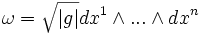
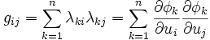
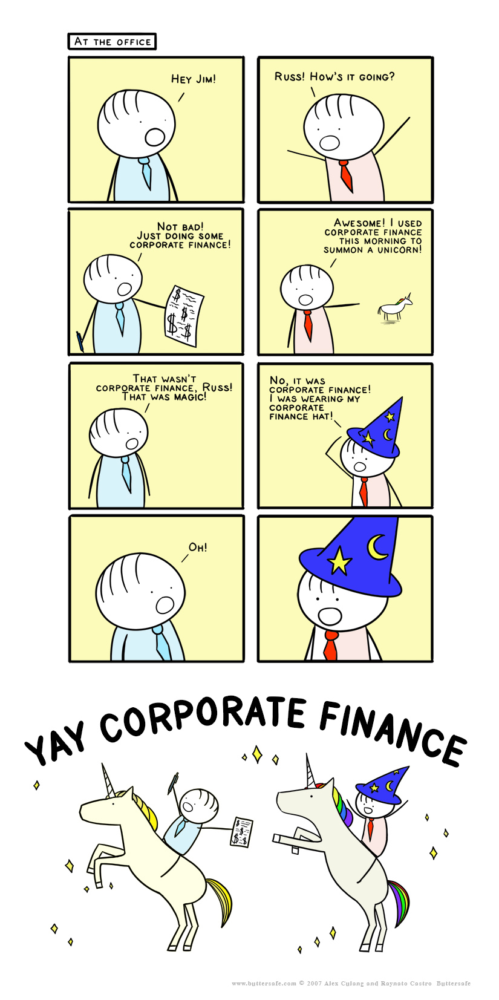
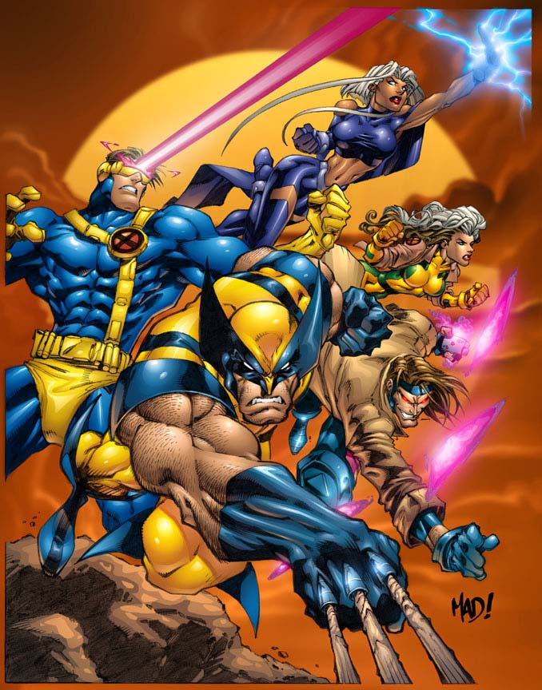
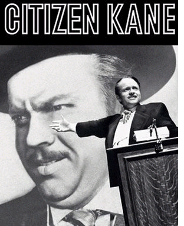
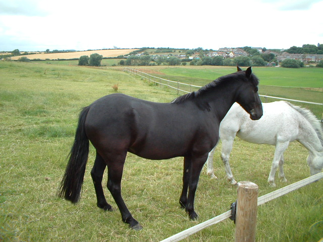
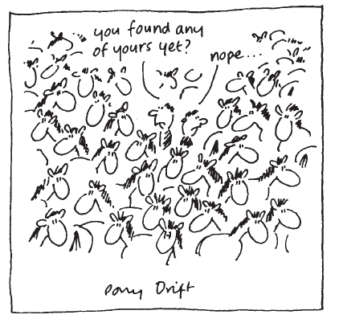

#7961 1 2006-04-09T17:49:44Z SlappyMcGee Hey guys (first post), I was wondering if I could have some help on 37-1.
(I don't know if this is the right forum for this, so if it isn't, let me know.)
#163416 3 2006-04-09T21:57:20Z SlappyMcGee have you tried watching the highscore top 20. in those? the first part just after getting the first set of gold is pretty tricky to do. but this route used in the top 20 id probably the best one to try for this level.
Jesus, thanks! I would have never thought of that.
#8052 1 2006-04-14T19:09:18Z SlappyMcGee Hey, on the highscores list, for episode 00, The entire episode, the leaders name is "Winnar" and he has 618.575 for a score but when you watch his game, he finishes with a time in the seventies somewhere.
#8144 1 2006-04-17T23:13:07Z SlappyMcGee http://numa.notdot.net/map/38626
I have five out of five right now. (Out of the one person who's rated it)
#165916 1589 2006-04-17T23:35:41Z SlappyMcGee I've rated:
A Game of Tilt A Box 4/5
This Is Not A Daffodil 4/5
Double Agent 5/5
I'd like rated:
N-Diana Jones And The Temple Of Copyright Infringement
Thanks much.
HUGE EDIT: I accidentally posted the test version. Try it again.
#8146 1 2006-04-18T01:15:08Z SlappyMcGee I think a good feature would be a ghost thing, like they often do with racing games. After you complete a level and you go back to beat your score (or the highscore), you would have the option of showing a faded demo of your or the best time.

#9768 1 2006-06-28T23:42:40Z SlappyMcGee Hey, I know that when you get to the last level of the 10th episode in a column you can not do the fourth level and still unlock your flavor. My question is this: I never did 59-4, so when I beat every other level, will I still get the oh so coveted secret, or will I have to go back and beat the entire episode?
#196087 3 2006-06-29T00:21:46Z SlappyMcGee Yeah you will. To get all of the secrets then you need to beat every level, its as simple as that.
llright, thank you. I am currently on 69-4, so I am very excited to find out what lies in store for me 150 levels from now..
#9773 1 2006-06-29T02:31:56Z SlappyMcGee How in hell do you do the part with the two thwumps?
Edit: I have since noticed that there are six thwumps in the level, so I mean the two vertically running ones.
#207730 10 2006-07-27T05:16:32Z SlappyMcGee I've been killed 2,230 times more by mines than zap drones, the second highest. Which means I voted for all 3,477 mines. Yay mines.
#207732 35 2006-07-27T05:25:04Z SlappyMcGee It is a decimal. If a sequel is a whole number, then 1.1-1.9 would just be fractional revisions. After 1.9 it would be like 1.91 or something.
I think an N2 is within the the realm of possibility, but I M&R spoke of charging (Shareware) for future games. Will N2 retain N's free status? Only time will tell. (Or M&R... the prospect of them responding to me thrills me indeed)
#208137 14 2006-07-28T05:05:16Z SlappyMcGee Jeca, thank you for bringing that to light. The most brilliant map ever. HOnest to god. Especially how those first missiles didn't fire. I was waiting for it and it never came. WHAT SUSPENSE!
#209370 14 2006-07-31T03:57:32Z SlappyMcGee The Eighties sucked. I found them much too hard. 90's weren't quite as hard, which I found anticlimactical. So I'm saying 60's-70's.
#209701 25 2006-08-01T00:17:38Z SlappyMcGee Uhhh, I run a mac that has Windows Media Player and .WMV playing abilities.... Nontheless, we would need a group of defined people to decided which DDA's get in, or which "artists" to use.
#209740 6 2006-08-01T02:32:01Z SlappyMcGee I would like to judge please.
#209954 18 2006-08-01T17:34:42Z SlappyMcGee More quotes regarding Camisade:
"To be or not to be"
William Shakespeare
"Get out of my house!"
Jon Stewart
"N? Isn't that James Bond's boss?"
Prime Minister Tony Blair
"Camisade is good, because Camisade is a good game"
G.W. Bush
#210059 6 2006-08-01T20:44:52Z SlappyMcGee I'm in.
I'm kind of new to the whole process though, could somebody give me a rundown of what I should do?
#210066 31 2006-08-01T20:58:21Z SlappyMcGee I think that it should definitely be on store-shelves. My parents don't like buying things online, and I don't have a credit card. So if it isn't on shelves, they will lose a good chunk of their pre-teen/teen market.
#10408 1 2006-08-01T21:33:51Z SlappyMcGee Hey, I was just wondering if I could get a little help on 81-4 (AKA Sky = Limit by Heartview)
Thanks much.
#210088 17 2006-08-01T21:45:40Z SlappyMcGee Fact: Aju is never wrong.
Fact: Aju hates arms.
Fact: Aju Plays N.
Fact: N does not need arms.
It's called logic, people.
#210098 106 2006-08-01T21:58:34Z SlappyMcGee Dear LF, I was curious to know if you could make a sig for me using my current avatar (
http://erikrose.com/images/art/gallery/thumbs/thumb-dude-lebowski.jpg) .
Please just add length to the left of it in the same color (And maybe complete the red circle) and in big white letters write "Slappy" and below the "McGee". Please keep the capitalisation. Let me know if you are going to do it or not. Thanks much.
Edit:If it wouldn't be too much trouble, try to throw a Canadian flag in somewheres too.
#210109 21 2006-08-01T22:26:14Z SlappyMcGee Fact: Aju is never wrong.
Fact: Aju hates arms.
Fact: Aju Plays N.
Fact: N does not need arms.
It's called logic, people.
and how do You IMAGINE wallslide without hands????????
fact: your'e wrong!
fact: there's no logic here!!!
There's plenty of logic... How much does he really use his hands?? Wallsliding can't be too difficult to do without hands. We just need to ease N into it. Cut off one arm and when he gets used to that, we'll go for two.
#210124 10 2006-08-01T22:59:54Z SlappyMcGee Feel free to just post poses. I think that's how this works.
#210125 34 2006-08-01T23:04:05Z SlappyMcGee Any idea what the limitations of the Shareware version will be?
#210134 12 2006-08-01T23:22:30Z SlappyMcGee Question to George: While Judging, do we take colors into account?
#210135 341 2006-08-01T23:26:08Z SlappyMcGee ^Is definitely in a different timezone than Cerberus or myself.
#210156 7 2006-08-01T23:59:27Z SlappyMcGee Perhaps it would help if you specified which tutorial you are referring to.
#210161 121 2006-08-02T00:05:50Z SlappyMcGee Artist: The BEatles
Song: The Ballad of John and Yoko
Translation: 48.
Question: When did The Simpsons start to suck?
#210167 3 2006-08-02T00:14:33Z SlappyMcGee I had a map that was 5 ninja's for one vote. So much for that.
#210274 7 2006-08-02T04:30:57Z SlappyMcGee Many people have beaten the game. The secret is easy to find out, but don't look on Metanet. But really, the secret isn't that big of a deal. If you hate the game so much that you aren't willing to play through it For Fun, don't waste your time.
#210277 13 2006-08-02T04:36:31Z SlappyMcGee Obby probably didn't even know there were such tutorials on the metanet website.
Apologies. I wasn't aware of them either. Where might they be located for future reference?
#210701 14 2006-08-03T00:58:39Z SlappyMcGee Dear Obby,
My only suggestion to you is that you ensure you have 100% comprehension of what you are posting abot before you rush to post. It'll save time in the long run.
#210820 512 2006-08-03T05:59:18Z SlappyMcGee <Bannannakid>Anyway, you all should miss me terrible when I'm gone.
<Banannakid> Even you, Aju.
<Banannakid> You most of all.
<Aju> What was that supposed to mean? O_o
<Aju> F*ck.
<Aju> I think he's going to kill me now.
#210831 20 2006-08-03T06:40:40Z SlappyMcGee ... is dead.
#210848 1045 2006-08-03T08:23:12Z SlappyMcGee Here' a pic of me and my loser buddies back at the last Halloween. I was a girl in our class that nobody liked, and it's safe to say I look a lot hotter than she does.
Actually, I clean up pretty nice.
I think my right half is hot.
Oh, and me with varying degrees of hair length.


#211087 12 2006-08-03T21:27:32Z SlappyMcGee So, do we post our characters here?
#211118 19 2006-08-03T22:21:09Z SlappyMcGee My singing in the shower can be heard throughout my house. I am sure the family finds that pleasant.
#211129 115 2006-08-03T23:32:28Z SlappyMcGee Pedophile/Children's Entertainer. I'm not kidding, sadly.
EDIT:
Wikipedia: Pee Wee Herman#211131 18 2006-08-03T23:45:50Z SlappyMcGee 7 And counting. But do votes of zero ninjas really count?
#211132 5 2006-08-03T23:49:07Z SlappyMcGee I thought computers had already proved that it ws possible he could have done it... if he were a robot.
#211135 1170 2006-08-03T23:56:26Z SlappyMcGee 10/10. Too damn mysterious.
#211189 21 2006-08-04T02:09:28Z SlappyMcGee Name: Jason "Banky" Edwards
Class: Grocer.
Height: 6'4
Weight: 180 pounds
Age: 22
Interesting facts:
Has a pretty good sense of direction.
#211209 14 2006-08-04T03:18:33Z SlappyMcGee Weird, when I'm drunk I rant about Mel Gibson...
#211229 1053 2006-08-04T04:05:35Z SlappyMcGee He reminds me of a combination of Bo Bice and That mailman guy from Cheers.
That "guy"'s name was Cliff Clavin, 'Blizzy.
#211240 2 2006-08-04T04:41:20Z SlappyMcGee I agree.
And I don't want any lip from you naysayers.
#211247 7 2006-08-04T05:18:28Z SlappyMcGee Wow you're a pro at Paint (I probably could make something three-quarters as good, but I'm too impatient to create something like that  )
)
Dear Mr. Keron,
Apparantly you didn't understand the point of this thread. It roots back to John F. Kennedy. Remember during the Bay of Pigs invasion when Kennedy went to go golfing? It made for an interesting Seinfeld episode. Unfortunately, Kennedy had an important to choice to make: Fuel the oncoming Vietnam war, or perfect his golf game. He asked an important question, and he was split into two halves. It is a metaphor for life. You failed to ask any questions, Mr. Keron, and I'm afraid that my wang is most displeased. Of course, being halves, we realise that it is a hard concept to grasp, and after all, we are half-Canadian. But unless you can post in the form of a question, think back to big ol' Kennedy.
And keep in mind, we can answer any question. No matter how brilliant. Because...
Two Halves AreBetter Than One
~The Left Half~
#211251 23 2006-08-04T05:36:50Z SlappyMcGee And your... *checks* 16. Way to go! Your on your way to be an alchoholic!
Ha, I was only joking there, Obby. I am 100% sober, and I still rant about Mel Gibson. Man, I hate What Women Want...
EDIT: It did entertain me that you bothered to check my age.
#211265 24 2006-08-04T07:50:23Z SlappyMcGee I'll do it. Here are my stats.
Name: Homestar Runner
Class: Office Worker
Anything Interesting: Has very good eyesite*
*Does that count?
EDIT: Terribly Sorry.
#211435 3 2006-08-04T19:05:20Z SlappyMcGee Yeah, I have completed it a couple of hours before you did this, using that way. Thanks!
#211449 16 2006-08-04T19:25:05Z SlappyMcGee I will answer all of your questions until Righty returns on the 15th.
i briefly read this thread, but from my understanding, you can answer ANY question i ask.
soo..
why is it that the little paper boat sank and jamal got wet and all the guacamole exploded??
edited:: i before e, except after c.
This brings me back to ol' George Washington, master of all that the could see. He was a brilliant sailsman, and one day, after chopping down some vicious trees and turning them into paper, he noticed that he could make a boat out of them. Unfortuneately, his friend Jamal was brought along. The boat ended up sinking into water, and Jamal indeed got wet. Now, although the guacamole exploded might seem homogeneous, it is actually because Jamal left it in the microwave with his spoon, and was too wet to turn it off.
The answe to your question: Paper can't float when it gets wet, so if you have your heart set on paper, use a wet paste to keep the paper together, much like paper mache. It can build surprisingly strong structures, but you will still needwood for support and it will have to be waterproofed. I suggest you read the book "Voyage of the Paper Canoe" by Nathaniel Holmes Bishop, who rode a paper boat from New York to Florida.
I would like to ask one question..... How do you know if you are the left or right half.
Well, lo and behold, we can merely look at our sigs. To know how we became the sides we are, it is a simply rooting back to the Lyndon B. Johnson period, when this man was runnning loose.

He was villainous, but imagine if he had switched sides? He would look silly.
I think it's beautiful that you two have found each other. It's just a testament to how this forum allows us to join together and forge bonds of happiness, friendship and maybe, yes, maybe something a little more.
Unless, of course you guys didn't meet on the forum/IRC in which case I'm going to have to with the response of, "Whatever."
For your answer, we can look back to George Bush Sr., who was President at the time the very roots of IRC were beginning. He hated The Simpsons, and he was so busy with that and killing people, that he barely noticed Jarkko Oikarinen's IRC in late August 1988. A mere 18 years later two halves have formed together. Touching, no? (By the way, that wasn't a question. Please refrain from posing non-questions in the FY00CH3R.
Answer any question, then, eh?
...
What is the name of my aunt who lives in Vermont?! metanet/spaz.gif
(I still think that's an amazing drawing, tho')
To be able to answer that question, one must ask themselves "Where is Vermont?" The correct answer to that is "Right under Canada, and more specifically, Quebec." Really, who is your Aunt? Is she a notable Vermonter like 30th President Calvin Coolidge? I think not. Is she actor William H. Macy, famous for his role as a nervous man trying to con his father in law out of money in Fargo? No. Your Aunt is simply a regular person, but still she does not escape our scope. Her name is Jill.
...
AAAH! Question mark! Speak to me!
OMGWTF
i don't understand this... half?
Curious question, dear friend. The answer to your question lies here: WWGFD, which of course is
What would Gerald Ford Do?, and I believe what he would do in this situation is pardon Nixon, much like he has done in the past and been heavily critcised for. So, think to yourself, "Hmmm. If he saw two people who are halves and have to carry our billowing guts in a bag, what would Gerald do? The answer is he embrace us, ask us a logical question, and be pleased with the results.
#211473 19 2006-08-04T20:11:08Z SlappyMcGee Well, considering the apparent theme of this thread, I have one question to ask: Who is your favorite U.S. President?
Our favorite U.S. president is obviously Abraham Lincoln. The man survived a war only to get shot in the theater. He hated slavery and was the first U.S. president to be assassinated. Also, he has weird handwriting:
Plus, you have to love the hat. And, he had a vice president named Hannibal. Need I say more?
To Keron: At the risk of getting more brine on me, is her name Madeline?
#211556 23 2006-08-04T22:19:53Z SlappyMcGee Alright, Mr. Left Half, answer me this:
In the 42nd dimension, is it better to arrange things in a line or in clumps to get the minimum surface area and/or volume? If the answer is yes, explain why beer is actually a mixture of champagne and tofu.
Well, I'll answer this, but I believe President Garfield already has this one pretty much covered:
As you may be aware, the 42nd dimension is one of our favorites. It all lies with in ths:


Of course, what that basically means that 42nd dimension has no use for space, and as such, does not use surface area. On the other hand, the volume has to be brought in using the proper nexus zones, here specified as N's, and it has so far been impossible for scientists to achieve this feat. And as for beer being a mixture of champagne and tofu, you are incorrect. Champagne is only called Champagne if it is from the region of Champagne, and as such, beer is made from tofu and sparkling wine.
~The Left Half~
#211564 39 2006-08-04T22:37:21Z SlappyMcGee This is what happens when you zoom in on Chris Rock's pimples...
#211569 9 2006-08-04T22:42:42Z SlappyMcGee It's made out of ohpos's level (takes most credit for)
G.E.B
It looks pretty cool. I stared at it for 44 seconds.
#211652 48 2006-08-05T02:26:38Z SlappyMcGee So set a deadline for people to join, like tomorrow.
#211672 27 2006-08-05T03:46:16Z SlappyMcGee To the last three people,
Although we appreciate your support, please refrain from not asking questions. After all, What would Gerald Ford do?
~The Left Half~
#211892 30 2006-08-05T19:01:19Z SlappyMcGee I didn't see anyone ask this anywhere... so
LOL WTF? (Hey, it's a question...  )
)
LOL WTF indeed. The answer to this question seems to lay way back 20th Century America, where internet slang was born. Unforetunately, it actually roots back to seventh President of the United States Andrew Jackson. Andy, as his friends called him, was te first democrat, and has such, he hated war and would rather hug people and listen to Jefferson Airplane. He smoked a lot of weed and one day, while getting "high", he noticed a yellow submarine floating along. He later changed his name to Bob Dylan, wrote a song called "Yellow Submarine". Nobody has ever heard of this little gem, though, as it was largely shadowed by The Beatles song of the same name. So, the answer lies here: A/S/L?
#10474 1 2006-08-05T21:30:07Z SlappyMcGee Hey.
I was thinking we could start a team for Metanet on WhatPulse, considering our large community. Basically, what it is is a program that records however many times you click or type and it adds to your team's score. Then we dominate the world: One click at a time. In my experience, it doesn't lag or anything. You can download it here:
WhatPulse Downloads
You'll have to register and join our team. The team name and password are:
Name: Metanet-Team
Pass: thengame
Happy clicking!
~Slaps~
Edit Edit: For mac users, it's available here:
RapidShare Link#212043 7 2006-08-06T03:30:51Z SlappyMcGee i don't get this. please explain more clearly
Okay.
You first have to go to the link provided and download the WhatPulse software. Once you've done that, you go to
www.whatpulse.org and in the bottom left corner, click register. Fill it out and answer the confirmation email. Then login and go to teams, again in the bottom left corner. Join the Metanet-Team. When prompted for a password, put in "thengame". Then put your login information into the Whatpulse software. It tracks how many times you click or type, and it adds that number to the team. The more people who sign up, the higher that number gets. Understood?
Edit: Woot. Advanced Member.
#212082 36 2006-08-06T04:58:28Z SlappyMcGee Uhmmm.. N's sex is in the eye of the beholder?
(Man, I've always wanted to use that in a sentance)
#212089 2 2006-08-06T05:19:49Z SlappyMcGee Yeah, it is true. And it's fantastic.
#212094 31 2006-08-06T05:37:26Z SlappyMcGee I was wondering if I could get two:
One that says "Fan of Jesus" with some picture of a cross or something on the left, and another that says "Presidential Candidate" with something American-Flag looking on the right.
#212095 21 2006-08-06T05:43:44Z SlappyMcGee Some of those games aren't even first person shooters (MGS3, Splinter Cell) but nonetheless, Black was a terrible game, and I think that it is hard to poll like that without including Goldeneye, which most people hail as being a great FPS, even now. But my question to you: Does nobody play Battlefield 2? Come on, people.
#212096 3 2006-08-06T05:47:32Z SlappyMcGee I think the question was more why he died: It is simply because N has an insatiable hunger for gold. (And the ladies.)
#212406 32 2006-08-06T23:08:28Z SlappyMcGee Why are we naked? I suppose it's a matter of habit. Back when ol' Jimmy Carter was Prez, everybody was allowed to run around naked. Because he was a filthy democrat. And his brother was a drunk. Also, I like the way the wind feels on my body.
#212414 34 2006-08-06T23:26:58Z SlappyMcGee So you hate democrats, then?
Incorrect, good sir, I said Jimmy Carter was a *filthy* democrat, not that all democrats are filthy. I merely hate Jimmy Carter.
#212417 13 2006-08-06T23:30:47Z SlappyMcGee We've actually gone up about 200 positions since yesterday. I think if everyone joins, we could almost be in the top hundred.
#212489 36 2006-08-07T02:46:26Z SlappyMcGee Mmkay, then. Which one of you fine folk lives in Montreal? 
Hey! I was just in Montreal. Today actualy.. but back on topic...
Question: What do you think of our current pres ?
I think there are two problems with your question:
One, you say "our" as if I would have the same president as you, and
Two, You fail to mention what country/timezone you are referring to. Come on, people, this is day one stuff.
However, if you were referring to Mister America (George Bush), I think it would be treasonous for the halves to go against him. So all I have to say to that is YAY AMAIRICA!
#212528 10 2006-08-07T03:44:24Z SlappyMcGee Why don't you just steal a pirate card from some gangsters?
#212821 25 2006-08-07T19:37:19Z SlappyMcGee I've joined, but how do you join the team?
There's a button that says teams on the bottom left of
www.whatpulse.org#212968 8 2006-08-07T23:49:07Z SlappyMcGee Well, I don't know about the rest of you, but I sure as hell don't care....
Welcome back.
#214999 41 2006-08-13T07:24:42Z SlappyMcGee Hey guys. We have 22 members and going strong. I just broke one million keystrokes. Keep up the good work!
#215006 43 2006-08-13T08:42:26Z SlappyMcGee I just joined after like half an hour of hard work. I really hate e-mail verification. I have already had a bad experience today with it trying to register with Warrock.
Anyway, I was wondering how do I see other people's stats and stuff?
Also, my name there is Dr_Penguin.
Edit- I only wish scrolling counted
Assuming you have joined the team... Just go to team stats in the bottom right, Mongoose.
#215182 47 2006-08-13T20:53:56Z SlappyMcGee Alright cool.
Another question ( sorry to be such a pest ), does anyone know how could I become a team manager and what can they do?
I can make anybody on the team a team manager (Because I am the founder) However, all they can do is change the password or the banner above us, so it's useless. (Although if someone wants to make a banner, that'd be sweet.)
#215626 33 2006-08-15T01:23:45Z SlappyMcGee Jason
======
*wakes up and looks around*
"Hey, everybody. Who are you guys? I'm Jason Edwards... What is this place?"
*stomach grumbles*
"I'm starved."
*Looks outside*
"Oh my god.. is this everywhere?"
#216663 10 2006-08-18T07:46:56Z SlappyMcGee Hmmm... Can I start a thread for maps with good ratings so that we can snipe them?
#216664 2608 2006-08-18T07:49:05Z SlappyMcGee Rated a-cardi's map. Quite generously. Would ya mind rating
Around The World#216879 13 2006-08-18T22:06:44Z SlappyMcGee 39-4 Tower of long mistakes int.
There's some others.
#218700 24 2006-08-23T06:36:55Z SlappyMcGee This topic is solid proof that even gods double-post...
#218701 16 2006-08-23T06:47:56Z SlappyMcGee You guys are real jerks, you know that? Why wouldn't anybody tell him that to open Ned, you have to open your .sol file with Notepad and add some numbers everywhere? Real cool, jokesters.
#219474 90 2006-08-25T05:55:20Z SlappyMcGee I NEED MORE, JT, MORE!!!
I would like one that says "Proud Slave of Xenu" with a picture of something evil like Tom Cruise, and also "Colbert Nation" With a pic of Stephen Colbert. Mainly the eye area. This will merit you an eternity in L. Ron Hubbard's Heaven. THANX!!!!!!!!:D
Worth mentioning: Xenu: Light Green Tint. Colbert: Light Pink Tint. Man, I love you.
#220028 782 2006-08-26T04:54:08Z SlappyMcGee Banned for joining after me, having more posts than me, having an avatar I can't make heads or tails of, and having numbers in his name. Word.
#220029 95 2006-08-26T04:58:06Z SlappyMcGee Slappy, I love you too, man. I love you too. *doesn't go into details*
Bahahaha, I love the Colbert one. 
Word, my friend, Word.
Also, thanks much.
#220030 25 2006-08-26T05:04:47Z SlappyMcGee 6 really /is/ pointless. Nonetheless, everybody has goddamn suggestions, why do your generic ones get their own topic?
#220582 2 2006-08-27T17:38:39Z SlappyMcGee N.
#220618 11 2006-08-27T19:20:13Z SlappyMcGee im gone... maybe 4ever... 
Do you mean you are leaving? If not then what?
im leaving... for good .... noone will miss me... so whats the matter... bb 
Cya around. Oh wait: I won't!
#220663 3 2006-08-27T20:32:27Z SlappyMcGee Well, we were all happy when we found out you were leaving on IRC. Also, I genuinely hate you and your poor grammar and irrelevance to topics.
#220680 100 2006-08-27T20:59:24Z SlappyMcGee I need more, friend o' mine. Because the last ones were so great.
I need one that says "Screaming Orgasms!" . And... Uhhh... for a picture... put... a picture of Groucho Marx.
#220687 4 2006-08-27T21:04:30Z SlappyMcGee I want to have secks wit all of you. This is just fantastic.
#220790 3 2006-08-28T00:05:05Z SlappyMcGee One day, long ago, in a galaxy not much different then ours (Except it had floating gold and lazer monsters), A young ninja walked through the forest. He noticed a small grey platform on the ground. Upon stepping on it, he was launched into the air. "I'm flying!" he exclaimed.
#238139 33 2006-10-07T05:54:50Z SlappyMcGee Tanner, you miserable son of a bitch,
I miss you already. I plan to send you daily emails or comments, whatever is sexier at the time, twin o' mine. Your sendoff was the kind only someone really cool or a total douche who's only posted six times would do. I think we know which one you are. And by the way, Brit is still just my friend. Sabrina's the real ticket.
Much love from the home country,
Jay.
#246752 48 2006-10-28T05:31:37Z SlappyMcGee Wow. I miss this.
I love you, blargh.
Do not die.
#246756 2 2006-10-28T05:41:48Z SlappyMcGee All of them. You are my friend.
#246953 50 2006-10-28T16:11:52Z SlappyMcGee No.
#247689 6 2006-10-29T23:58:35Z SlappyMcGee I would like an avatar. Have it say my name. Or something. You know. Be cool.
#247695 53 2006-10-30T00:06:23Z SlappyMcGee TCG:
We did so, and posted it on YouTube. Sadly, we lost the link, so just browse through and find it. Shouldn't take long.
and i_forget:
Yeah.
#249824 61 2006-11-04T05:05:11Z SlappyMcGee Question: Why must you have your sig try to force me into a spasm? All I see now is MonkeyBlargh Nutfeces. Or BigMonger II.
*ahem*
The reason you are feeling a spasm is due to Celtic Myth, which states that warriors can contort themselves so that their bones literally bend outside their bodies, known as a warp spasm. The Irish mythological hero Cúchulainn is particularly associated with the warp spasm. In it, it was said that "every hair on his body would stand out straight, with a bead of blood on the tip, and his skin would turn inside out and move about of its own accord". You are experiencing the same thing. Congratulations.
oh, and obby, I don't even understand a word your saying. Lay off the drugs, punk. There's no hope in dope.
#12091 1 2006-11-04T05:16:27Z SlappyMcGee Well, it's that time of the year again.
It's nearly my birthday, only 4 days, 23 hours and fifty one minutes from now, and I have decided that I need a new avatar. A distinct avatar. An avatar that has my name on it. So, since I have no skill at this sort of thing,
I MADE A SELF-SERVING CONTEST
I know what you're thinking. "Well, I'm going to totally join this contest."
So here's what you'll win:
14 deds from me and one bonus ded from a mystery source (Not me)
A link to your profile or maps in my sig
The love of Jesus.
Here are the rules, folks:
It must have my name on it at some point.
It can move, but not too quickly.
It must contain one (or all) of the following celebrities:
Justin Timberlake
Charlton Heston
Jesus
Any ONE Spice Girl
Steve Buscemi
Geddy Lee
John Travolta
Felix the Cat
You may submit as many entries as you want.
*ahem*
Go.
#249830 25 2006-11-04T05:31:52Z SlappyMcGee even IVE had better maps then that. its a 4/5. no more, no less
Hehe. Limer thinks he's people.
Incidentally, that is the best map evar. Not just 2006; It is the greatest N map since before time. Even the Eighties.
#249831 8 2006-11-04T05:35:44Z SlappyMcGee N?
#249833 11 2006-11-04T05:38:28Z SlappyMcGee I voted bad. Not because I've ever seen anything of yours; It was actually a vote on your self-confidence. And you failed, Mister.
#249834 18 2006-11-04T05:48:20Z SlappyMcGee What the heck? You can't tell me what to do, AMLT. You're not my real mom.
#12107 1 2006-11-05T05:36:27Z SlappyMcGee You thought it was December Twenty Fifth.
You were wrong.

#250253 34 2006-11-05T05:43:23Z SlappyMcGee I am content using Firefox 1.5.0.7.
I fear change.
#250255 179 2006-11-05T05:46:21Z SlappyMcGee I shall give you a nine out of ten because I really really really really like your maps. And nobody who makes good maps could be evil. Except Dave. Lousy drunk...
#250262 7 2006-11-05T05:53:44Z SlappyMcGee
EXPLOSION!
Quote: Monkeyfeces Nutmonger III, November 05, 2006 06:15 am
This is crazy. I'll never be able to understand it. But, man, is it trippy. Where's my bong?
I put it back under your bed when i was done, dude.
Another one of these on the way tomorrow, by the way, guys.
Hey Guys:
Comic Two. This one, I put a lot of text and I made it as regular as possible, because after the courtroom comes the lynching scene, and if it turns out right, there will be no figuring out what's going on.
Enjoy, Droogs.


#250571 3 2006-11-05T23:08:20Z SlappyMcGee I /do/ love thiose levels. I'm glad you agree.
#250608 752 2006-11-06T00:39:04Z SlappyMcGee That had a lot of swear words in it... 
I hate it when people post about 5 links in a row of the same thing. I can f***ing read. Why can't they just post a single link? 
Stop spamming everywhere, Spammer.
(Haha)
Feel free to discuss and post your theories here, or on IRC, of course.
#251951 14 2006-11-09T00:33:00Z SlappyMcGee I don't want to join this, but I have to. So I am. In a way. In an entirely more accurate way, I am not at all interested.
Sign me up. (If you have the time.)
#251958 14 2006-11-09T00:37:18Z SlappyMcGee This is by far the worst pack I have ever played. The first fifty maps went so slow, and then when I finally finished them, I realised that was it and I was pissed. Congratulations on making the worst pack in the history of Metanet.v
Jesus; Some of these levels look like you made them with your eyes closed. This would totally win in a competition to see who could throw as much random crap that totally sucks onto a map.
Criteria:
Difficulty 0/5 (I beat them all in two minutes.)
Feeling: 1/5 (I can almost feel something... rage.)
Structure: -1/5 (Utter crap.)
Overall Ability: 0/85 (He has none.)
0/100. What a terrible effing pack. I hope you explode.
this may end up being my return to MetaNet (to whoever cares)
Incidentally, nobody, you suck up. Never come back.
#251972 5 2006-11-09T01:05:29Z SlappyMcGee All good entries. But are any of them /that/ good?
No. Keep working.
#252965 26 2006-11-11T08:43:12Z SlappyMcGee I refuse to listen to the suggestion of a thread whose first twenty posters cannot spell or form sentences. PSP's suck and cost to much. You're a douche for owning one.
BWD: We joined on the same day, and yet you sound like some pretentious c*ck to new members, as if we have to pass through Brit's noob test before we become accomplished members in Metanet. Eat a shoe.
#252966 7 2006-11-11T08:44:53Z SlappyMcGee Palm Pilots don't run windows.
Flash player is avalible for Windows CE/Mobile, which aren't palm pilots.
No modern day PDAs have a screen big enough for N, do they?
And they most likely don't have the processors powerful enough for it to work, until the code is greatly optimized.
In short: this won't happen anytime soon.
Or will it?
#252968 86 2006-11-11T08:50:10Z SlappyMcGee I'm kind of disappointed that you didn't go with the much more apt "Vote or Die" slogan.
#252970 12 2006-11-11T08:55:28Z SlappyMcGee I am the Queen of France.
#252971 6 2006-11-11T08:57:30Z SlappyMcGee Did you know that
100% of people that are named "AntiGravity" are noobs?
1% of all people who posted here before me are also noobs?
Kablizzy takes up 99%?
#252972 16 2006-11-11T09:00:50Z SlappyMcGee Name:SlappyMcGee
Predicted age:Ageless.
Member number:Who gives a flying f*ck?
Quote:"Who gives a flying f*ck?"
Mark:Famous
History:
SlappyMcGee is famous for fitting his size thirteen into AntiGravity ass.
He also bakes a mean cake.
#252974 327 2006-11-11T09:07:57Z SlappyMcGee Oh God, I'm so alone.
#252976 16 2006-11-11T09:12:00Z SlappyMcGee I'd just like to point out that BWD has his head lodged so far up his rectum that he can't even see that imitation is the sincerest form of flattery. Unfortunately, instead, he tries to sound like the good guy by using words like "man" which implies some sort of bond, but instead, he's being an idiot, pretending HIS intellectual property has any value at all. Well, guess what, BWD, it's time to re-evaluate your life and realise that you're going to make a lot more friends sharing than you will owning a monopoly over something that you can't even do a good job at anyway. Die.
#252978 28 2006-11-11T09:17:25Z SlappyMcGee First of all, don't double post.
Second of all, I beat N three months ago, but I didn't waste hard earned time making a thread about it. Get off your @ss and do something.
#252981 10 2006-11-11T09:22:06Z SlappyMcGee The reason he probably fount that is on Friday's the GameShadow e-mail is sent out. GameShadow being the site we are voting on for N at the moment.
Wow, way to make a basic connection.
Incidentally, Times they are a changin'.
#257146 3 2006-11-19T23:05:05Z SlappyMcGee l_d, I can't believe I didn't get a ded. But i love you and this pack.
8/8.
#258280 14 2006-11-22T21:58:33Z SlappyMcGee I'm in, but I'm starting at 11-12 Eastern Time.
#259258 66 2006-11-25T05:18:51Z SlappyMcGee Here you go.
Attachment (lost): post-13-1164431931.doc
#259288 88 2006-11-25T06:12:37Z SlappyMcGee Here's my 700 something demo.
Attachment (lost): post-13-1164435157.txt
#259322 98 2006-11-25T07:35:48Z SlappyMcGee Beat it, finally.
Attachment (lost): post-13-1164440148.txt
#259334 105 2006-11-25T08:22:32Z SlappyMcGee 
Beautiful.
#259365 118 2006-11-25T09:16:34Z SlappyMcGee 
FRONT

Back!
A Futurama lunchbox available here:
http://www.lunchboxes.com/futmetlun.html
For only 19.95$. I think it would be really cool to own this lunch box because then everyone would know you were a fan of the show and could start conversations about it. Props to the creators for making such a great show.
"Join Fry, Bender, and Leela as they stumble their way through the 31st Century with this beautifully crafted lunch box. Manufactured in a limited quantity by the legendary Dark Horse Comics group, this lunch box is embossed just like the ones you had as a kid. Lithographed graphics in the front show the three protagonists (or antagonists if you insist on using SAT words) flying through space while the picture on the back ( click on inset) shows Leela fighting off space aliens while the man and the robot cheer-on. Gold tinted on the inside. Lunchbox measures 8" wide, 7" tall, and 4" deep. Shipping Weight: 2 lbs"
#259396 122 2006-11-25T10:04:54Z SlappyMcGee SlappyMcGee has no map.
Shame to his family.
Or he does:
Ju.#260013 12 2006-11-26T20:41:10Z SlappyMcGee Although it is admittedly a remake of the first Bond movie, where he initially becomes an agent
Incorrect, good sir.
The first bond movie is Dr. No. This is an adaptation of the first Bond
novel, by Ian Fleming.
Fantastic movie.
#271209 2 2006-12-16T07:22:36Z SlappyMcGee Do you wipe back to front or front to back?
#12902 1 2006-12-16T07:50:39Z SlappyMcGee A story so sexy it must be told in bold:
I awoke at 6:32 AM. It was Easter, 1983, and a cool wind had blown in through the window. I dared not question the heavens, because God knows two things: Relentless Death and Weather, the latter being the subject of topic here. I had slept for too long; Three tattoo parlors and a sleazy hotel make for a surprising knock-out combination, but three White Russians couldn't have helped. I was confused: Where was this strange place? Why was I here? Weird questions.
I wandered around the nearby area and discovered torn books with colored titles and interesting pictures. From what I gathered (It was much too early to read), the books were historical. All except one, which told of a land which seemed even more advanced than our own, where witches and pixies wandered freely. No doubt this was a pipedream, but for a small second, I felt that it could be a prophecy.
I had not showered in days, and my hair stuck to my head from grease. Dirty pimples inhabited my face as if I had hand delivered an invitation to their king. They were not limited to my face. They covered the upper portion of my back, and I even found one or two on my ass. My clothes were dirty and smelled of spoiled food. My Van Halen T-Shirt, ripped and stained, with coffee forming an almost perfect circle stain on the stomach of the T-Shirt. My jeans, almost fully intact, with a few grass stains and some rips at the bottom. This was my current state of affairs, and allow me to assure you, I felt no better than I looked.
The sounds coming from the nearby opened window reminded me I was in America; This kind of bustle never happened in peaceful Canada. No, the runaround lifestyles of Americans may have seemed more complete and full, but in the end, they were just substituting their lack of direction and hope with busy work and hate. I couldn't have this, not at this time. I closed the window, and retreated into darkness.
Some wild cats were lurking around this mahogany colored room. It had a green wallpaper strip at the top, and two closets, one of them in the wall, the other completely seperate. I looked through the one seperate from the wall and found it packed with clothes. I put on a New York Rangers jersey and some flamboyant blue shorts I had found. Interestingly enough, the other closet was completely empty, save for a tiny note that, when read carefully, said "Welcome to Metanet."
I was finding this situation stranger and stranger by the minute; What did those Canadian video game developers have to do with the situation I was in? How did I end up here? Was I drugged? This almost perfectly empty and clean room was no habitat for me, and I wasn't particularly fond of the books I found. They spoke of mysterious heroes, which would be interesting enough, except all these heroes did was jump! They never tried to fight back, they never even did cool backflips or anything. They just jumped and avoided things until they made it to a safe haven. Goddamn pussies! At the end of the books, they often foreshadowed to a project the same company had developed about robots, and this interested me some. They actually looked like they'd have abilities!! I was enjoying those parts of the stories, what with the horrorshow Ultraviolence and all, but I didn't think this company would ever get off the ground. After all, according to these books, the first hero they provided was free; This new robot would cost money, and money isn't exactly a commodity the people in the year of our Lord 2006 like to give away often.
I had had enough of my surroundings, and for whatever reason, dashed for the door. It was locked, and no amount of kicks to this door were making it budge. Needless to say, After searching the room harder, I remembered the window being opened. I reopened it and climbed onto the roof. Breathing in this fresh air for a change was a pleasant moment I shared with my lungs, which brought back the sudden memories of a girl. A girl named Sabrina...
TO BE CONTINUED...
#271238 89 2006-12-16T07:54:02Z SlappyMcGee I remember when you told me the story about the fat chick getting effed by the ears of corn.
Ahhh... Memories of Vent.
#272220 3 2006-12-17T18:54:47Z SlappyMcGee The fact that you actually care proves that you are, indeed, a loser in dire need of a life.
#272227 85 2006-12-17T19:00:44Z SlappyMcGee Voted. Thanks for the oppurtunity, holmes.
#272659 20 2006-12-18T01:16:38Z SlappyMcGee SIGH
Okay. I am not scared about nothing fronting any ops or admins or whatever. They're like us. Not superior. That's what mods and admins say. We're cool. we can tottaly pwn you. It's like internet rascism. They are the whites. We are the blacks. That makes our membership harder. The whites continue being such an ass to black people meaning that they think they are superior. That's how Like B_T did this. We can't negociate because it always the '' whites " desicion. And mark my words. These phrases will be spreaded all over the forums.
But of course. I'm not talking to everyone. To the ones who are wearing the hat.
Thank you.
That is the greatest thing to ever be printed on this forum. You, sir, are my hero.
Except Dave is better than you, and sound minded on this issue. So shut up.
#12956 1 2006-12-18T01:56:20Z SlappyMcGee In the other thread, he says that if something isn't done, he'll leave forever. Do you care?
http://metanet.2.forumer.com/index.php?sho...=0&#entry289540#277265 44 2006-12-26T03:57:57Z SlappyMcGee For Christ Day I got:
Four Games for my Wii (DBZ: BT 2, LoZ:TP, Red Steel, Madden '07)
Fear and Loathing in Las Vegas Criterion Edition
Simpsons Season Seven
Third Rock from the Sun Season One
Trivial Pursuit 90's
Trivial Pursuit SNL
A Kodak digital Camera
A New Burton '07 Snowboard
A Pulp Fiction Poster.
#280039 43 2007-01-02T07:59:06Z SlappyMcGee A professional Review by an Idiot:
Legacy: Expanse is an interesting expansion to familiar love. It's like hooking up with your best friend's hot cousin again when she visits him. It isn't boring, it's fairly attractive, and you can probably get away with it on his bed as long as you aren't a sloppy aimer.
What I find the most intriguing is this by far one of the easiest mappacks to get into. I can pop onto any level and be content with playing it. No map stands out as bad or amazing; In fact, few levels in this pack aren't amazing.
It's incredibly easy at times, and incredibly difficult at others. What's noticable here is the All Gold Challenge. You can play through the first twenty levels without too much difficulty, but going for all the gold is where the real fun starts.
And I think that may be the only problem with Legacy's Second leg of this crazy Tripod that holds up their egos: IT ISN'T THAT DIFFICULT. There's no real drive to go for all gold, and I mean, why would you?
Because it's fricken' Legacy. You WANT to play these maps, and you do, and you aren't disappointed. It's like when B.B King and Eric Clapton put out that album together; You got exactly what you expected. And that isn't too shabby when you expect perfection.
~Jason~
#282327 3 2007-01-07T07:17:23Z SlappyMcGee Alright, I'll leave quietly.
#282333 9 2007-01-07T07:24:59Z SlappyMcGee This would have almost been funny if the forum wasnt lagging with the tags loading
edit:dammit
What SlappyMcGee tags?
#282342 14 2007-01-07T07:52:05Z SlappyMcGee I hope somebody's username is "Fuck".
Or [sup] because that would fit perfectly.
#13392 1 2007-01-08T00:27:05Z SlappyMcGee Dear Metanet Staff, Members, and Guests alike,
I would like to announce my leaving from the forums, #n, and least importantly, NUMA. I have had a great run with you guys. Its been a lot of fun, but I dont feel the same as I used to when I came on here. It has also come to my attention that NUMA is hypocrisy, and that the only way to avoid being classified as a Sniper or an Anti-Sniper is to vote with the crowd. I have spent too much time on this site and IRC especially, but I do not regret one single moment of it. I think you guys have shaped my life, and when I am old, I will think back to these times fondly.
Some shout-outs:
Tanner: I love you, brah. I know well stay in touch, so this definitely isnt goodbye.
Dave: Youre consistently one of the funniest people I have ever had the pleasure of meeting. I will always remember your Raoul stories. You are one bad dude. Thank you for popularizing Mafia on #mafia.
TS: Thank you for the most fun I have ever had on N. Your two packs and your help with beating MTI will always be skippy with me.
Spiker: No hard feelings, man-o. I may have called you a retarded monkey at some point, but that doesnt mean I dont love the time weve spent together.
LV: Thanks for hosting the Vent server and just being generally one of the coolest people on IRC. I loved playing against Dave in Mafia, and I have you to owe for that. Thanks.
K-Gax: HardCore Donuts, man. I still love working for you. Its been real.
Clovic: Thanks to both you and KinGAleX for the musical discussion that one time on Vent. I also thank you for making me feel much less lame about my own social problems.
Kablizz: Ill miss you dearly. You know why. Tell me if the rash goes away.
GamingWolf: Ive always enjoyed you telling me exactly what youre going to write on IRC in the Metallus voice moments before you write it. Stay away from the hood; its dangerous.
Sgt. Poptarts, Base, rocket_thumped, thecalcgenius: I always felt at home with you guys. Im sorry Im not writing anything specific to you, but my memories of IRC chatting with you guys are too many.
Bigblargh: You were the first person to accept me on IRC. Then you stopped going on and we became halves. Funny how life works. I love you, dude.
Obby: I wish you were quitting instead of me, because I hate you.
Aju, Jig, Guis: We never chill anymore, which is really lame, because I love all three of you. Individually, of course.
jtbandes: Thanks for the good times on IRC and the beautiful sig tags. I will have them tattooed on my buttocks.
Pavel: Thanks for being around to talk about hockey. Its been hot.
Most importantly, I know we havent talked much, but [sup] will be missed the most. Hes been really cool with me, and I love him to death.
Now, assuming the sup tag is working, I dont think Ive forgotten anybody.
I love you all!
SlappyMcGee

EDIT: Crap, I just remembered. If any of you need to get in contact with me:
Slappy.McGee@gmail.com
Keep it real.
#282839 18 2007-01-08T04:27:27Z SlappyMcGee Wow, I'm so ashamed to have forgotten krusch and Yahoozy on my list of mention. You guys have been hella cool. Sorry.
Guys, don't bug Obby. He still hasn't figured out what it was all about.
Anyways, I just came back to make sure people noticed this. Thanks for all the sentiment, guys. I shed a single tear.
Love and Good Will,
Jason.
#13601 1 2007-01-20T05:38:25Z SlappyMcGee Hey, this was just an idea I had. I figure it gives more of us to post semi-naked pictures of ourselves on the internet.
I'll go into more detail if enough people seem interested. Basically, my idea was this:
Lots of Pictures in Various Poses
An Interview that barely affects the points.
A talent that's sexy and amazing (Like topless volleyball.)
If you're interested, post here. We'll discuss.
Go.
EDIT: It occured to me I'll probably need two judges to help too, so anyone interested in that can post as well. A competitor can't judge.
Competitors:
Bigblargh (He's hawt. I've seen pictures. And had him in the sack. Dozens of times.)
LittleViking (Also, Fantastic in the sack. This one time... Well, you know the rest.)
Tanner (I've never had him in the sack, because that would be incest. We tight.)
Caero (Sack.)
McP3000 (You get the drift.)
Judges:
Slaps.
Mr_Mongoose
#287737 39 2007-01-20T06:07:48Z SlappyMcGee #287909 436 2007-01-20T20:19:32Z SlappyMcGee The Velourium Camper II: Backend of Forever
by Coheed and Cambria
I'm around. Expect a new comic by next Saturday.
#14273 1 2007-03-02T16:49:56Z SlappyMcGee Well? I would go same sex.
#304217 18 2007-03-10T19:27:23Z SlappyMcGee Fuck.
I have no idea how somebody could be so removed from logic that they could actually post evidence of their idiocy on the internet in an effort to prove that they did not deserve to be banned. Do you think there's some sort of goddamned conspiracy against you? Three seperate ops banned you. They didn't care that the others had. They banned you for a reason, with the exception of Dave, who banned you for a joke. A joke you fucking missed, but that you admit is a joke. So how relevant is that to this discussion? It isn't.
So moving on:
You frequently admitted in your original post that you were Trolling. Even if you wanted to play through some dumbass loophole, Trolling is whatever it is in the opinion of our ops. If you don't share this opinion, then don't call what they'll ban you for trolling, call it whatever the fuck you want. The point is, being an arrogant asshole and trying to harass an op is banworthy.
Not only that, but if somebody in power doesn't like you, they'll get rid of you! And you know why these people were chosen to be in power?
Because they're levelheaded folks. They don't hold irrational grudges. They don't try and flame you without any reasons. They don't ban people just to be douches. They ban people for doing things that do not contribute to the growth of the community. If you've already been banned in the past for this behaviour, or warned by Tanner to not continue discussion on a topic that was settled, then settle the fuck down.
Finally, in regards to calling McP gay, you admitted to doing that, which is sexual discrimination.You do the crime, you do the time. Your behaviour makes me wonder what kind of a rat you are. If you got busted for selling drugs, would you plead to the judge not guilty because so and so is also dealing drugs, effectively getting you all arrested? The point is, is that you need to learn to serve your sentance without being a whiney bitch. Nobody in the forums is going to feel any sympathy for somebody who admits to doing something wrong, but doesn't feel that the rest of us are being treated harshly enough.
Fuck.
#304358 11 2007-03-11T05:24:40Z SlappyMcGee I hate everyone new.
Slaps, N's Resident Xenophobe.
#304360 36 2007-03-11T05:30:07Z SlappyMcGee Ultima:
The only behaviour we can take note of after your ban is of you being a gasping asshole, trying to find anyone else dimwitted enough to join you in a quest to fix an operator system that isn't broken.
A) If you love IRC, wait for your ban to finish, apologize, and rejoin, enjoying your time. Stop this.
B) If you hate IRC, the ops, the joke kicks, anything, Leave and never return. Stop this shit again. Nobody cares enough about you as a member for it to actually be important to us whether you left or not.
#304486 518 2007-03-11T19:58:58Z SlappyMcGee Primary colours: On the left side, I want the colours to be mostly red and black. On the right side, I was thinking mostly Red and Blue.
Theme:The theme will be of my two favorite hockey teams, The New Jersey Devils and The Montreal Canadiens, going left to right in that order. I was thinking for some really soft, wavy maybe water-like borders and lines, running into eachother.
Renders/images: The logo for the Devils and the Canadiens.
Text: I don't actually want the names of the teams on the sig, just my name in Futura font in the bottom right corner. If Futura font is unavailable, just go with whatever's cool.
Complexity: I'd like something fairly complex. Looking at Pavel's sig, I like the idea of that.
Matching avatar (yes or no): No thanks.
Dimensions (size): Five Hundred by One Hundred.
Preferred artist (optional): Not at all. I'd like this sig to be done in the next month though, so get at it, please.
Many thanks.
#304487 67 2007-03-11T20:05:40Z SlappyMcGee I don't know him very well, but I'd say he's at least a nine. Most of his posts are punctual and relevant.
#14401 1 2007-03-11T20:27:19Z SlappyMcGee They've just announced a 110% price match policy over at Wigs.com!
I can't wait to pick up the new Jon Renau for my girlfriend/significant other!
#304558 3 2007-03-12T01:04:54Z SlappyMcGee Pfff. You know that isn't true..
#306121 56 2007-03-18T17:27:49Z SlappyMcGee ...
What was the point of this stupid poll? All it's going to do is make more and more people think about a stupid idea that somebody's maps are overrated. The only way a map can be OVER rated is if the person in question is a multi-user. Since we can assume l_d is not, then all you could possibly accomplish with this poll is perpetuating a small idea and possibly hurting somebody's feelings.
If you don't even believe that he's overrated, then you are wasting space on the forums, because it is a very small (albeit vocal) minority that believes his maps are overrated.
Personally, I think all his maps suck, though.

#306122 12 2007-03-18T17:34:10Z SlappyMcGee Gold everywhere.
And lots of laser drones.
Also, a player should be representin' the brand. So write your name in the bottom right corner using mines.
#306123 33 2007-03-18T17:38:29Z SlappyMcGee There's a very seedy underbelly of N.
It seems when people vote in the morning, they're into chicks with dicks.
When it's the afternoon, they don't want to ever have sex. (Or they're mooso, and so they just won't ever be able to.)
And at night, the homosexuals attack.
It's all a rich tapestry of Metanet.
#306127 11 2007-03-18T18:22:11Z SlappyMcGee I think the flying idea is trash. On the other hand, you wouldn't really be adding buttons, considering the vast majority of us use the arrow keys to control our N anyways. The up and down buttons are just waiting to be used.
Either way, no.
#306128 4 2007-03-18T18:29:32Z SlappyMcGee Okay, I get this.
k1rbywasthere is a stupid fuck who I'm fairly sure nobody here cares for. His dumb posts and lack of contribution to the community actually makes nuns cry. Why the fuck stick a number in your name? Was kirbywasthere taken? I'm sure it wasn't. I think he has to work on getting his head out of his ass and leave Bash N' Thrash, because this kind of enviroment perpetuates stupid behaviour from idiot five-year olds like him.
Also, he's a racist.
#308394 27 2007-03-28T21:18:53Z SlappyMcGee I'm obviously in.
The last one was Jesus. I found the least ironic lunch box and managed towrite something influential about carrots.
I'm even considering taking the day off work on Saturday, because that's what screwed me last time. But whatever. Winning isn't what InsomNicon's about. It's about hanging out, browsing the web and making sure dangerous minorities know their place.
See you then!
#308408 15 2007-03-28T21:57:03Z SlappyMcGee It is a nice story, inn'it?
I think that as long as people continue to read this and post, we only contribute further to some sort of megalomania that "Kimmie" has. The fact that there are actually people on this forum, Nay, Human Beings on Earth who care for somebody like this is complete dick.
The thing is is that Kimmie can create as many accounts as she wants, but she still doesn't contribute anything worthwhile to the forums except an ironic chuckle on how pathetic someone like this is.
And as nice as that little "Thank you" note is, it still doesn't mask the fact that nobody on this forum, her included, actually cares about one another. I think if we've learned anything from this experience it's that somebody can threaten to kill themselves, make us all feel like complete jerks, and then not go through with it. Just because you acknowledge that some people are going to shun you doesn't mean we won't. All it means is that your head is to far up your rear end to realize that nobody cares. Stop posting garbage like this. If you really are only interested in reconciliation and not attention, stop posting here and send PM's to the people you mentioned.
See you around, Chad.
#309058 2 2007-03-31T06:43:32Z SlappyMcGee Wow. Way to try and sum up an entire community with three people. It's like sticking LV, McP and Tsuki in a chat room and saying that represents us.
Stupid question.
#309060 3 2007-03-31T06:48:17Z SlappyMcGee Since when is Dave leaving?
I leave you guys alone for ten minutes, and you all start quarreling with eachother and dying. What the dick is up with that?
Whatever. No matter how much you polish his shoes, Dave isn't going to like you, YoursTruly.
#309090 9 2007-03-31T08:13:07Z SlappyMcGee Wow. Way to try and sum up an entire community with three people. It's like sticking LV, McP and Tsuki in a chat room and saying that represents us.
Stupid question.
Why are you such a fucking douchebag towards me? What the fuck is your problem, anyways? It's a simple little fun question. It's not like I'm trying to sum up the whole fucking community by who their favorite lesbian is. You're a little fucking twat, and right now, what I'm doing is probably trolling, but I don't give two fucks, because twats like you should be warned just as much as people who swear outside of BnT. And don't tell me I'm over-reacting, you little cunt, because you know damn well that you pissed me off with your little tangeant on my returning thread, and now you just go along and try to imply that I'm trying to separate the people in this community into three categories? Besides, it's completely and utterly fucking irrelevant to 'sticking LV, McP and Suki in a chat room and saying that represents us.' Those are three veterans of the forum. All I asked was who your favorite fucking lesbian is!! Is that so hard to contemplate the huge difference between the two scenarios?
Jesus fucking Christ, this is prejudgice gone bad. Why the fuck would be such a retard as to post such stupid garbage like that? God, stop trying to sound so smart, because your comment was just you trying to be a funny wiseass and failing miserably.
It's cunts like you who don't know anything that elected George Bush and are driving around in SUV's, guzzling gas like it's fucking candy, and putting this big asshole in the ozone layer.
Whoa... I went too far. But, I may as well not hit Backspace, just to show how much I fucking hate you for being a complete asshole for no reason. (And, yes, I have a reason right now.)
Do want people to fucking accept you as who you are, or do you want them to fucking like you?
Your choice, cuntbag.
Well played. You are clearly the master wordsmith.
#309100 12 2007-03-31T08:25:01Z SlappyMcGee Well played. You are clearly the master wordsmith.
What? Whaaat?
I can't hear you with your mom's cock in your mouth.
Just speak up, okay, big guy?
Wow. For somebody who is apparantly really cool with the lesbian community, you seem to have real problems with my transgendered mom.
But sorry that I made a wise joke. I'm honestly a little insecure on this site, so I try to use humor to mask these feelings. Instead of just ignoring them and being the bigger person, you really called me out.
Look, I don't want to make any enemies here. I just want to try and keep as many friends here as I can.
Much love,
Jason.
#309210 264 2007-03-31T18:26:13Z SlappyMcGee It's an effective name.
8/10.
#309422 16 2007-04-01T05:18:47Z SlappyMcGee Zacharius "The Aborted Foetus" McFly.
#310607 92 2007-04-07T03:09:01Z SlappyMcGee I hate all of you.
EDIT: I copped out.
Attachment (lost): post-13-1175915916.txt
#310652 121 2007-04-07T04:24:26Z SlappyMcGee
I chose a picture of the Pseudoplatystoma, or the Tiger Shovelnose Catfish, for two reasons.
A) I think it is an interesting tropical fish, both fun to look at and learn about.
B) It is migratory in nature, much like Norm Macdonald, who has migrated towards the United States (Or Freedomland) after being birthed in Canada.

I chose this picture of "Death" from Family Guy because the character was once played by Norm Macdonald, and ironically enough, there is a mound of what appears to be carp behind him.
#310693 145 2007-04-07T05:44:13Z SlappyMcGee http://profile.myspace.com/index.cfm?fusea...endID=165938539
I simply adore U2. If you think prom, you think about "With or Without You". Such a perfect, brilliant song. I think this band does a good job of emulating Bono's brilliance without his, y'know, assholism. Also, I totally believe they would come and play for our prom. They need to support the band. How amazing would it be to be slow dancing with Kablizzy to "Beautiful Day" and right during the bridge, leaning in for a nice, soft kiss that lasts forever to you. Then you guys glare into eachother's eyes, and you just know this will be the night.
Also, their foreigners, so we can totally pay them less than minimum wage.
#310710 153 2007-04-07T06:32:43Z SlappyMcGee By no means all gold, or very fast, but I think I deserve three points for being hot.
Attachment (lost): post-13-1175927563.txt
#310721 162 2007-04-07T07:15:14Z SlappyMcGee Hey, this is a mediocre attempt. But the one I've decided on.
PAINT FTW.
Attachment (lost): post-13-1175930114.jpg
#310747 183 2007-04-07T08:15:50Z SlappyMcGee
The above is a picture of the one and only Molly Ringwald, from The Breakfast Club. I think I had my first erection to Sixteen Candles. A beautiful smile, and a lovely woman.
Time ravages...
#310777 205 2007-04-07T09:37:11Z SlappyMcGee CraigCRAIG<3
Please pay special attention to my subject
Craig. While he seems special or significant at first, reading all of his different quirks, you realize that this is a man just pretending to fit in witha crowd he never belonged. He's a catholic who loves Kerouac, Happy Madison films and Green Day without blinking an eye. Love him or hate him, he's average.
#310787 211 2007-04-07T10:22:55Z SlappyMcGee GoldFish.
Groove on.
Tired as fuck, by the way.
#310974 309 2007-04-07T19:44:50Z SlappyMcGee Hey, good job, all of you. I didn't even come close this year because of a number of factors.
1) I had been up twelve hours before the event started.
2) I was in no mood to shop for outfits.
3) Dial-Up sucks.
#311033 330 2007-04-07T21:22:02Z SlappyMcGee 
Dave, if you get this culturally enhanced reference, I'll respect you forever.
#311148 360 2007-04-08T02:20:13Z SlappyMcGee 1. Name all of the members of the Legacy Team.
Frank Sinatra, Dean Martin, Sammy Davis Jr., Peter Lawford, and Joey Bishop.
2. How many maps has Dave made Publically (On NUMA and in Levelpacks combined)?
Fourteen.
3. How many Tetris accounts have existed on the forums to date?
I'd only date one of them, but whatever's cool for you.
4. How many maps had been submitted to NUMA as of July 03, 2006, 3:00 PM?
No thanks; I take mine black.
5. How many letters are there in Mare and Raigan's combined full names?
M+A+R+E+A+N+D+R+A+I+G+A+N+S+C+O+m+B+I+N+E+D+F+U+L+L+N+A+M+E+S
31 letters in all.
15 Different Ones.
6. How many challenges were there during last year's InsomNicon?
I don't think the quantity of the challenge really matters. It's the quality. The declining quality of insomNicons has been apparant ever since we started hosting them. God damn. I mean, when we started out, it was understandable that there'd be some mistakes; we were young. Now, thousands of years later, there can only be ONE HIGHLANDER.
What? I've lost myself.
7. Which NedCons has Kablizzy judged?
All of them.
8. How many Webcomics have been posted to the forums to date?
None of them.
9. What date did Mare and Raigan first join the forums?
November Ninth, 2001.
10. How many times combined have the following members left the community?
Kablizzy: 0
blue_tetris: 48,000,000,000,000,000,000,000,000,000,000,000.
TheDailyLlama: 0.5
Combined score of 48,000,000,000,000,000,000,000,000,000,000,000.5.
11. What movie starred Dr. Cox as an effeminate cowboy?
Wagons End!
#311169 369 2007-04-08T03:03:50Z SlappyMcGee J.D.'s narration: Oh, God, his ex-wife. The tension actually hurts. You have to break it; say something, anything!
J.D.: Banana hammock!
Dr. Cox: I'm betting your ability to thrive under pressure is what drove you to medicine.
Under pressure like a tropical fish, perhaps?
#14791 1 2007-04-10T05:12:32Z SlappyMcGee Throughout the duration of InsomNicon, many challenges arose. One of them included finding a cover band for our Prom. So, with that in mind, I went on MySpace and left this silly comment to Beatallica (This comment can be located about mid-way down their page):
Quote
Apr 7 2007 1:26A
Dear Members of Beatallica,
A small school by the name of Metanet is in need of a band to play for their prom. This prom, which happens to be the second anniversary of the school's opening, is scheduled to be the best one yet. Many of our graduating students are already enrolled to various colleges. I think that our prom could really use the likes of you. Your nice blend of two classic bands will be sure to please both soft-music loving girls and the much rougher jocks at the same time. Your approval of our school could also mean some major exposure for both parties.
I don't mean for you guys to try and lower your standards or anything, but I think a nice event like this would be great for your rep. We will, of course, pay to have you flown out here and anything else that can be afforded for you.
We do have one request, on the other hand. If you do agree to come, we fancy ourselves as somewhat U2 fans, and a rendition of "With or Without You" for the kids to slow dance to would be amazing.
I hope your phenomonal band will consider our (less) phenomonal school.
Love,
Insomnicon Administration Board Head,
Jason J. Grenia.
They're page said they needed to approve all comments beforehand, so I gave up on this quest, and instead, found a cheesy italian U2 coverband. Today, at about midday, I recieved this message from them. (Via the PM system on MySpace.)
Quote
hey there. found your message. are you serious?....
really.
what sort of details do you have? dates? school contacts/administration?
do the chicks really want to hear U2?!
this would be quite a challenge...we have no fear, just fun. if you had info, let's look at it together.
webmaster--Beatallica
In case any of you are unfamiliar, Beatallica is a popular band that covers the songs of The Beatles with lyrics, vocals and guitar riffs generally attributed to Metallica.
Revel in the greatness that is me.
#311794 10 2007-04-10T05:19:21Z SlappyMcGee What the fuck is a gondola? Some kind of spaceship?
#320723 9 2007-05-13T05:02:50Z SlappyMcGee Yeah.
This Dr. Dreams fellow.
I'd be into that.
Quote
But where will the killing end?
It won't. Ever.
BUT I WILL.
Never. Somebody close this.
#323165 7 2007-05-21T23:00:31Z SlappyMcGee Mr. Jacob Colossi:
I am interested in controlling a piece of land which I have highlighted in green for you on the enclosed map. I realize that I am inexperienced, but what little I lose in experience, I do more than make up for with my knowledge of politics and social sciences. The Republic of Valslain (#9), a beautiful water-surrounded tropic, would make an excellent setting for the new colony I have been planning.
My father, the King of Entrentia, has seen to it that I had a first-hand view of what it was like to be in power. The money he has provided me with insured I got a good education and I believe I am ready to take on a county of my own.
A colony that believes in freedom and democracy. A republic that does not wait four years to elect a new leader, but rather a country that can call a new election every year, but only if it so chooses. A country with no limits to the length of a reign of a great leader.
Mr. Colossi, I plead to you. Allow me to take this piece of land and turn it into The Republic of Valslain that we've all dreamed of. The paradise we've all believed in.
Sincerely,
Prince Johnathan Fledger.
Attachment (lost): post-24-1179788431.png
#323168 13 2007-05-21T23:15:57Z SlappyMcGee Smooth, Linus, Smooth.
I am into this like a Dead Baby.
#15344 1 2007-05-24T02:07:05Z SlappyMcGee That's right, Kiddos! It's that time of year again!
THE TIME OF YEAR WHERE WE ALL FIND WHO ELSE IS THE MOST COMPATIBLE WITH US ON AN INTERNET WEBSITE!
And with the new SlappyMcGee Love Calculator 1800 (Patent Pending), I assure you the most accurate results you've ever seen!
JUST ANSWER THESE TWENTY QUESTIONS AND BE AMAZED!
(Please send all submissions via PM. Ensure that they are well ordered, because if I have to look through your junk, I will delete it. If there is someone specifically you would like to test compatibillity with who you know has already taken the test, place his name as #21. Compatibility will be posted here, but your information is confidential. All submissions must be made by June 8th, 2007)
1. What country are you from?
2. Whom do you most admire on the forums?
3. What celebrity most resembles you in life?
4. What is your dream job?
5. Are you a virgin?
6. What is your age?
7. Favorite Fruit?
8. What is your favorite band?
9. Do you own any pets?
10. What is your favorite film?
MULTIPLE CHOICE SECTION! (REPLY WITH LETTER ONLY)
11. Which of the follwing best represents you?
a) Smart-Casual
b) Poignant, Witty, and Elitist.
c) New, excited, and Post-Crazy
d) Friendly, Easy-Going and Loving.
12. Identify yourself with one of the following actors:
a) Johnny Depp
b) Marlon Brando
c) Jack Nicholson
d) Brad Pitt
13. Hypothetical: You are stuck on a submerged submarine with a beautiful woman. It starts to fail, engine-wise. What do you do?
a) Make love to the woman.
b) Sing Yellow Submarine and Embrace Death.
c) Try to escape.
d) I am afraid of water, I would avoid submarines.
14. Which of the following songs best describes your character?
a) Cowboys from Hell-Pantera
b) All You Need Is Love- The Beatles
c) Undone-The Sweater Song- Weezer
d) High Voltage- AC/DC
15. What would be your favorite date place when getting food?
a) McDonald's/Fast Food.
b) An expensive restaurant.
c) Stay at home and cook.
d) Go to his/her house and cook.
16. What colour eyes would the ideal date have?
a) Hazel like a pale morning sky that tears into me.
b) Bright Blue, like a crisp day that just stays forever.
c) Green, like the wildlife that surrounds us, ever growing.
d) Brown, like the bark on the trees, whispering.
17. Choose One of Fox's Main Primetime Line-Up Shows of Past/Present.
A) Futurama
B) The Simpsons
C) Family Guy
D) King Of The Hill
18. Which of these courses did you enjoy the most?
a) History
b) Science
c) English
d) Gym
19. What brought you to this site?
a) That crappy online version of the game.
b) Human Interaction.
c) A web article.
d) Search Engine/StumbleUpon/Other
20. Last and certainly least, if you had to choose one President of these four, you would vote for:
a) Abraham Lincoln
b) John F. Kennedy
c) George Washington
d) Richard Nixon
Happy Match-Making!
#323930 3 2007-05-24T22:22:23Z SlappyMcGee Three submissions and running strong!
As an added bonus, the fiftieth submission will get to take me, SlappyMcGee, to My Prom.
Yeah.
#324324 16 2007-05-26T07:01:28Z SlappyMcGee "I like big butts and I can not lie . . ."
forgot the artist
That's "Baby Got Back" By Sir Mix-A-Lot, cunt.
Pussy Planet by GWAR.
#324325 719 2007-05-26T07:09:27Z SlappyMcGee Hey, shouldn't the "Thou" in MajikCunt's signature be spelled like, you know, "thou"?
Whatever. My real question is this:
I recently failed my Learner's Permit Exam for Driving. How do I stop myself from being on here or masturbating when I should be studying?
#15372 1 2007-05-26T14:48:09Z SlappyMcGee So, I'm currently banned fron #n.
Which begs the question, can someone who got heads and is now an op for the day, like, unban me?
That'd be nice.
#324391 17 2007-05-26T15:14:00Z SlappyMcGee Trogdor, if there were losses at both sides, then of course McP lost the war. In real war, America always wins. Or Democracy.
#324395 26 2007-05-26T15:26:41Z SlappyMcGee I think it's totally fair to judge noobs, or just about anybody. Example:
I am going to make a stern judgement on you. You're trying desperately to make friends or establish yourself on the forum by making three worthless polls that don't actually contribute anything to society, and your post count/number of days you've been on the forum says you haven't reached the point where you can stand up on a pedestal and judge everyone else, even if you wanted to.
Stop making polls.
#324397 5 2007-05-26T15:28:21Z SlappyMcGee Hey, dude. Dig the name. What's that based on?
Try and post in the right forum next time. Also, it's certainly not a rule, but capitilization and punctuation are smiled upon by the God that is Metanet.
#324399 4 2007-05-26T15:29:57Z SlappyMcGee Race maps are awesome like that. They aren't overly difficult, very cool to watch, and you still get an excellent feeling of satisfaction at the end.
Maybe you could try making some races of your own. I'd love to see what turns out.
#324400 3 2007-05-26T15:35:09Z SlappyMcGee Holy Arse. I never realized I was Sigg'd.
I feel blessed.
Whacky Chat client? How's that?
#324401 5 2007-05-26T15:37:52Z SlappyMcGee Dude, you know what I did quite a while ago, before I "quit" Metanet?
I was thinking, "Well, I'm fricken' bored. Might as well make a picture of half of each myself and Blarghy and see what happens." Anyways, I never found a picture of you that was in good proportion to any pictures of me. So I have a bunch of pictures of half of you all over my computer.
Neat stuff, though.
#324415 251 2007-05-26T17:19:04Z SlappyMcGee Bunny.
Sorry, Jabunny.
#324691 210 2007-05-27T18:37:15Z SlappyMcGee My vote goes to Nazareth- Love Hurts.
Holy awesome.
#324692 4 2007-05-27T18:38:23Z SlappyMcGee Wait; Why would you withdraw any money if there was a hooded stranger looking away from the cameras and eyeing the major exits?
Tough break, man.
#324700 24 2007-05-27T18:54:30Z SlappyMcGee More and more, reason and logic seem to be the benchmark for intelligence in this place. Being able to observe things and predict likelihoods seems more important to some people than the physical goings-on around them.
I'd rather enjoy the life I am rather than embrace what isn't there.
#324702 30 2007-05-27T19:05:35Z SlappyMcGee Excuse me?
What the hell is wrong with wanting to know what people think around here. Besides the way your judging me is a horrible way to classify somebody. My post count is higher than yours, "Judge Judy". If thats the way you see things than you shouldn't be judging either.
Infact, look at blizzard's post count compared to join date, even more so. Noobs need to realise that post count isn't everything
Haha. Oh, fabulous.
First of all, I'm going to try and ignore your terribly dated reference to Judge Judy and just say this:
You're totally right.
I did not realize you had three more posts than me. I am relatively new to the forums too, but I assumed I had been here longer than you. Oh, woe is me. If I would have known you had that three post seniority on me, I never would have said the things I said!
I realize now that you just wanted to know the thoughts and feelings of the forums!
Will you ever, No. COULD you ever forgive me?
#324754 9 2007-05-27T22:46:12Z SlappyMcGee Shakespeare never made up words. Shakespeare ripped off people who were inventing words.
#324848 6 2007-05-28T02:28:42Z SlappyMcGee Hey, MechDevs:
You have one of my quotes in your sig attributed to you. I could find my post if I have to, but fucking change it, plagerist.
Great song, Pavvie.
#324849 18 2007-05-28T02:29:53Z SlappyMcGee You thought wrong, sir.
I'll come up with a new one for posting.
Only Women Bleed- Alice Cooper
#325293 13 2007-05-29T11:39:26Z SlappyMcGee I refuse to actually physically look back, so I'll share my first IRC conversation.
It was, in fact, the first time I'd ever been on IRC. Ever. I decided to post, very nonchalantly:
"Isn't there a structural flaw by always keeping the control unit of a robot in the head?"
And who responded?
Noneother than blue_tetris.
Good times.
#15421 1 2007-05-29T11:42:39Z SlappyMcGee http://www.macleans.ca/article.jsp?content=e052913A
I hate how directly to the right of an article about the police, there's politics.
#338861 8 2007-07-04T22:21:26Z SlappyMcGee And for all you Canadians, have a moderately okay July Fourth.
#340264 8 2007-07-08T04:21:58Z SlappyMcGee Head towards the sound of the brook in an effort to use the stony bottom to build some sort of shelter from the rain and wildlife.
#340284 24 2007-07-08T04:54:45Z SlappyMcGee I love the TOB. He's like a melted bottle of Joy!
The survey was not fine because your poll choices confuse whether it was a serious survey or you were joking. But nonetheless, since you are seemingly the only one ass enough to just pick a member at tandem and say that he produces sub-quality maps, I think the fact that everyone loves his maps and few have even heard of yours speaks for itself.
Attention slut.
#341047 2 2007-07-09T21:22:33Z SlappyMcGee I am not!
#341081 72 2007-07-09T22:46:48Z SlappyMcGee Return to the lounge and fetch something from the fridge like the Coca-Cola which should be able to shield your nose from the awful smell in Lab B and investigate.
#341084 67 2007-07-09T23:00:16Z SlappyMcGee I believe I should be an honorary Metanember. For my dedication or some crap like that.
#341557 11 2007-07-11T00:35:25Z SlappyMcGee *ahem*
I wish to be rescheduled. Not necessarily for the same album, just keep me in mind. Y'know?
I know.
#341558 30 2007-07-11T00:38:37Z SlappyMcGee I cheated on Kablizzy with a sailor once.
#341563 11 2007-07-11T00:44:26Z SlappyMcGee Pinkerton by Weezer.
It's got humour, romance, and that Just-Right amount of awkwardness that both keeps us from sharing all of our feelings, and keeps us from growing as a community.
Or, you know, Whatever.
#341565 34 2007-07-11T00:51:29Z SlappyMcGee Fascist.
Anyways, I will once again mention that I am not circumcised and my girlfriend named my penis Rocky. (While we were having pre-marital sex! Take that, Authority.) So...
All uncircumcised peniis look Italian.
#341567 36 2007-07-11T01:03:35Z SlappyMcGee Never mind my never mind.
Time One Friday,
Time One Saturday,
and Time One and Two on Sunday.
#341571 314 2007-07-11T01:14:02Z SlappyMcGee Jaymie.
#341574 2 2007-07-11T01:18:50Z SlappyMcGee I could not agree more.
I mean, it's these kind of suggestions that are the backbone of N.
Haha. If N didn't have a backbone, wouldn't that be cool, dudes?
#341577 52 2007-07-11T01:20:57Z SlappyMcGee Screw the first hundred levels. Take them out, and just have numerous phallic-ly charged names with MTI as the level data. Also, add three buttons. To twirl.
#347059 63 2007-07-25T00:53:58Z SlappyMcGee Yeah, 19th, whatever. I told kkstrong what I wanted to do in IRC, but I imagine he wants the bump in here so.
HERE I AM.
#352176 37 2007-08-07T01:47:52Z SlappyMcGee Margot and the Nuclear So and So's.
Brilliant band, and humorous.
#352655 149 2007-08-08T08:09:00Z SlappyMcGee I'm withdrawing my submission on account of management issues. I do not give you permission to use my maps.
#352760 154 2007-08-08T18:41:30Z SlappyMcGee I'm withdrawing my submission on account of management issues. I do not give you permission to use my maps.
#352946 156 2007-08-09T05:46:54Z SlappyMcGee I'm withdrawing my submission on account of management issues. I do not give you permission to use my maps.
#352955 14 2007-08-09T06:28:23Z SlappyMcGee Awesome, awesome maps. Awesome maps, Awesome maps. Awesome maps.
All in all, I give you Awesome Maps out of Ten.
#353450 157 2007-08-10T08:22:29Z SlappyMcGee I'm withdrawing my submission on account of management issues. I do not give you permission to use my maps.
#353929 159 2007-08-11T06:52:46Z SlappyMcGee I'm withdrawing my submission on account of management issues. I do not give you permission to use my maps.
#16676 1 2007-08-11T08:05:27Z SlappyMcGee I've been on Metanet for about a year. It's been a long year, but one of the best in my life. I can basically attribute this to the three D's: Dave, Dave, and Dave. But there was someone else. Someone who's always been there for me after school on Wednesdays. His name is Clovic.
I met young Bradley not but ten months ago or so. We spoke on the Vent. He seemed offstandish at first; a lone wolf with a hell-fire attitude. But soon I got to know this deranged coyote, and he turned into a friendly Labrador. Together, we've straddled so many obstacles. I've heard him talk about his obsession with kinky sex he'll never have. He's heard me worry about my girlfriend, a woman constantly on the move. Together, our nervous Vent-Quality timbres could be recognized for miles by those who knew us. We laughed together, we cried together. I remember sobbing on his shoulder the time I lost my dog Ol' Scratch, and he insisted on going out to look for him, even though it was pouring rain and I made up the dog to keep me company. Romantic gestures like that made me fall for this man.
But it wasn't always like this. There was the before time. The long, long ago. When he'd yell, and he'd throw plates. I could never love that Clovic, and thank God he's changed.
Recently, he took me for a nice picnic to the coast of the Laurentiens. It was a beautiful day, the sun glistened through his beautiful, unwashed rocker hair. I could tell that his love burned as much as mine. We stared into each other's eyes as we ate the peanut butter sandwiches I had prepared. They goo stuck to the top of my mouth, and I reminisced of the fear my mother had of getting peanut butter stuck to the top of her mouth. And with that thought, I passionately kissed Bradley, and our lips met. The freckles on our eyes aligned perfectly, and I could tell that love was truly in the bloom. The waves continued to hit our feet, and I asked, "Want to go back to my place and do it?"
And as I leaned over onto the bed, preparing to be mounted like Anderson Cooper every time Larry King wants to go somewhere, I heard Bradley whisper these sweet words, "I love you, Jason." And my body was ready and willing, my friends. Your 'umble narrator felt better than he ever had, but unfortunately, for only a brief time.
Clovic had been short before, but this time was perhaps his shortest. And as we laid there, cuddling, rubbing each other's nipples, I realized something. Clovic could never make sweet love to me for long because he didn't respect me as a mapmaker.
So map-make I did, friends. For four days, I pretended to be in a contest called, "Vehemence" so that Clovic would leave me alone while I made him the best maps he had ever seen. I shackled some of my best ideas, my thoughts and feelings about Clovic, into each and every one of these maps. Finally, at the end of the fourth day, I finished, and I meant to show him this pack, this glorious expression of my feeling.
But he was gone. His things packed up, missing. The photo of the two of us swinging around in Jamaica on that boat, torn. Only his picture remained, and this was not enough.
So I post this pack for you, brothers and sisters, in the hope that one of you knows my sweet Bradley, knows his touch, and will come forward and let him see this. For I think that this map-pack, shall show him how I truly feel.
With a love that echoes through the ages,
Slaps.
Attachment (lost): post-49-1186819527.txt
#354583 163 2007-08-12T19:27:55Z SlappyMcGee I would bet good money that he enjoys being a jerk more than he enjoys these sub-quality maps.
#355127 29 2007-08-14T07:35:03Z SlappyMcGee Aheh. I listen to Weezer while I play. I'm a pretty monsterous Blue Album/Pinkerton era fan, but their newer stuff seems to improve my playing.
Whatever.
#355139 32 2007-08-14T08:20:43Z SlappyMcGee Your brother is a comic genius. I demand you relinquish your position and allow him to become the rightful DRIKAM.
Today is the greatest day of them all.
One:

Quote: Ike Turner, November 21, 2007 01:25 am
Yeah, man... I miss my scotch... ;_;
When is episode two expected? 
Right. The Frick. Now.


COMMIC THREE IN THE FACE.
#384158 26 2007-11-28T22:35:50Z SlappyMcGee That was fabulous, Kablizy. More posts like that and you might just make it somewhere in this community.
#384161 890 2007-11-28T22:38:22Z SlappyMcGee No way.
SlappyMcGee will post next.
#384163 891 2007-11-28T22:39:28Z SlappyMcGee sry 4 the double post guys lol
Dave.
#390292 2 2007-12-17T18:42:16Z SlappyMcGee Good news, everyone! BEHOLD:
Gateway GM5424 Refurbished Intel Desktop PC
This Gateway PC comes of course with an Intel Core 2 Dual Processor, providing you with 2.13 GHz of sweet, sweet love. I know what you're thinking, you're thinking: Does this PC have the RAM I crave? Not only does it satisfy your 1GB needs, it doubles them with 2GB of DDR2 RAM. Did we mention the 400GB HDD that comes with this model? If we didn't, then allow us to mention it now.
Are you a man of the future? Get with the program, with dual-layer DVD-RW Burner Drive, which will allow you to pirate all of your favorite rentals for only a fraction of the cost.
Quality video card, you say? Of course! With this Gateway GM5424 Refurbished Intel Desktop PC, you get a This model comes with an NVIDIA GeForce 7300LE 64MB video card with up to 256MB of shared memory.
With a myriad of other things including an open box making it easily upgradeable and a TV tuner so you can watch your favorite episodes of "Gomer Pyle, USMC" right from the comfort of your chair, you're of course thinking: "OMG. However could this be under my five hundred dollar price window? I don't get it, SlappyMcGee! I DON'T GET IT!"
Neither do I. $429.99
(There are two downsides. Speakers come with it, which is a waste of money, and it does come running Vista. But I figured since XP is so readily available on the internet, you'd forgive that.)
THE PC DEAL OF EXTRAVAGANZA!!#396263 76 2008-01-03T18:14:08Z SlappyMcGee I'm actually going to have to ask you guys to remove all links to these maps from Metanet.
I was talking to our lawyers back at the Legal Crew and we were discussing copyright infringement, and we ended up on the topic of crime, which led to them suggesting this movie I've personally never heard of, "Goodfellas"
Well, I noticed the correlation between your map and the small-budget gangster movie, and the boys in Legal really feel you should change the name to something more gender-neutral, for instance, "Trapped!"
Again, thanks.
Slaps.
#434320 9 2008-05-07T04:10:44Z SlappyMcGee Sounds cool. I support this project.
#20231 1 2008-05-14T02:50:01Z SlappyMcGee I was on Facebook, searching for the celebrities who are occasionally humorous, when I decided to search for Rodney Dangerfield....
I'm the third result. Awesome? Yes.
Attachment (lost): post-5-1210733401.jpg
#20385 1 2008-05-31T02:35:59Z SlappyMcGee Hey, guys.
An opportunity to win a Rivers Cuomo signed guitar and I just need to link as many people as possible to their new YouTube Music Video. I know, it's a little annoying to advertise, but I think you need to understand why I want this.
Rivers Cuomo has always been this huge influence in my life. I bought my first Weezer album in 1996, which was Pinkerton, and there albums have helped me through so many rough times. Just clicking this link brings me a step closer to connecting with a guy I idolize. I implore you to help me out.
Weezer's "Pork and Beans" video
It's also an amazingly cool video, so check it out.
#444993 160 2008-06-15T18:06:50Z SlappyMcGee I have some secrets for you too, Atramental.
Years of waiting and aspiring, years of grueling training, years of pushing himself had finally led Leon to the moment of his dreams; to become a member of the mercenary squadron, Star Fox. Even with his broken body, his spirit roared with power as he overcomes his idol in life, Fox McCloud, in order to join the Star Fox team. Yet on their arrival to the Great Fox, Slippy's handiwork, the Arwing II, burst into flames with the snoozing Leon, obviously exhausted from his previous adventures. All said and done, Leon was able to recover from his injuries, less a broken arm and headache of doubt, and began his first mission with the team. Slippy's father, Beltino Toad, had finished construction of the self-destruct program, hoping to take down all aparoids with their one flaw; vulnerability to apoptosis. With the team defending the orbiting gate from aparoid attacks, with some help from Star Wolf, Beltino was able to finish the program. The aparoids departed, which seemed to leave a disturbing chill to Leon. Yet outside of his Arwing was a deadly secret; an aparoid bomb had lodged itself on his fighter and triggered- burning Leon's fighter into rubble. Did he survive? And will the team be able to take out the Aparoid Queen? There's only one way to find out... Slippy stood outside of the medical room, crying and sobbing loudly. It had taken hours, yet Leon's cockpit managed to stay intact enough for his body to survive. Internal hemorrhaging caused by 3 broken ribs and a second fracture on his right arm had left him in a state of dormancy. Fox watched over him carefully, helping ROB tend to Leon. Falco had stayed in the hanger; bellicosity burning in his blood, and depression swaying his eagerness. Krystal had come in every once and a while to check on Fox, and to make sure Leon was alright. "Team..." the old hare called over the com system, his voice quivering with sorrow. "I know what befell him is a tragedy... But we cannot lose hope now... We're so close to defeating the aparoids once and for all..." The team listened in sorrow, an aching feeling of depression looming over all of them. "At least he hasn't died... But we still have a mission to complete... And we have to save the Lylat System from these scoundrels..." Slippy wiped his nose, nodding in agreement, fresh tears still pouring out of his eyes. Fox just squinted, his lower lip trembling as his moral began to boil. Falco lifted his head up to look back at the hangar door, agreeing with Peppy- and finding an odd sense of determination. Krystal sighed, looking once at the fox who was now under life control, oxygen being pulsed into him, and nutrition fed in through a tube. "If anything... Let's defeat the aparoids for Leon's sake..." Peppy nodded. The others nodded in agreement. "Mhm..." Slippy sob fully nodded, wiping off the new tears. "Yes..." Krystal mumbled, closing her vibrant sapphire eyes and holding her hands to her chest. "Yeah" Falco nodded, cracking his neck and sitting in his Arwing. "Right... Let's go take down those aparoids! For General Pepper! For Leon! And for all the Lylat system!" Fox said with renewed enthusiasm, determined to avenge Leon. "Right" Slippy nodded, a fiery blaze set in the toad's heart. "Right" Krystal nodded, his blue shimmering eyes filled with the spirit to fight. "Right" Falco nodded, a broad grin realigning on his face, the sense of ending this all sending a chill down his back. "Right then, Team Star Fox- Let's do this!" Fox shouted, raising a fist. Unison, "YEAH!" coming from all other members of the team, except Peppy, whom was sitting down with a grin, Hm... Seems like that pep talk got them going...' The orbital gate unlocked the temporal distorters, aligning them to form a wormhole-like entrance. "Here we go team..." Peppy said holding onto his arm rests tightly, squeezing the fabric with his old hands. The Great Fox thrust forward, disappearing into the wavy green portal, being sent off to another area in the universe. Yet, upon reaching the aparoid home world, everyone seemed chilled with awe. "It's... Beautiful..." Krystal gaped, staring at the vibrant blue and white planet. "Heh... It's defiantly not what I expected," the vulpine leader admitted nervously, scratching the back of his head. "Warning; scans indicate that the planet is not to scale" ROB called over the com-line, still waiting to Leon in the medical room. "Hmm... Well team, head down there and take out any defenses they may have set up..." the old hare said in a low tone, "Fox and Krystal, I want you two to stay on the ground and take out any enemy hatchers in the area... Falco, Slippy, you two will take to the skies and prevent any reinforcements to arrive..." "Got it," Fox nodded. "As long as we finish this soon, I don't disagree..." Krystal nodded, wanting to get this war done and over with. "Heh, as long as I get to fight- I got no objections" Falco smirked lightly, crossing his arms. "I'll make them pay for what they did to General Pepper and Leon!" Slippy shouted, cracking his knuckles. Peppy nodded to himself, smiling faintly. "Alright team... This is our last mission- head out there and do your job..." Meanwhile, back at the medical corps room, the injured Leon stirred. "Ungh... Wh... Not again..." he growled, trying to sit up. ROB stopped him however, pushing him back into the pillow. "You are injured. Your health is only at a rate of 34%. With medical attention it will take 19 days to heal." ROB said in order to keep him down. "WHAT?! 19 DAYS?! The war will be over by then!" Leon shouted, getting cut off with an ached cough- blood splattering on the inside of his breath mask. "Your efficiency in this state would only increase the effectiveness of the group by 5%. Causing a minority to you and decreasing team efficiency by 14%." ROB explained, injecting a small green liquid into Leon's IV. "Argh!" Leon growled, struggling to break free. "Leon!" Peppy shouted, walking into the room, clearly angry. Leon yelped and stopped immediately, looking over at Peppy, half leaned over and resting on his shoulders. "You're acting like a child! The team already left and has started the attack on the aparoid home world. Now, calm down and sit still... You'll need rest..." Leon growled, thrusting himself up completely, sitting up to look at Peppy at eye level. "I vowed that I would become a great pilot and join the team... I never once said I'd let myself become a burden to them!" Leon shouted, enraged at his current disposition. "And even if I have to SWIM to the planet, I will do anything to help!" Peppy sighed, shaking his head and crossing his arms, "You know what kid... You remind me a lot of Fox... Always trying to do more than they can handle all on their own..." the old hare said with a small gleam in his eye. "But see... Right now, you'd only be a burden if you went out and tried to help... Y-" The old hare was cut off as a sudden jolt in the ship made Peppy fall over. "ROB! What was that?!" Peppy coughed, leaning up. ROB's eyes gleamed brightly as he made a quick scan over the Great Fox. "Multiple shots from aparoid fighters; the ship's hull has breaks and enemy decomposers have attached to the lower part of the Great Fox." Leon gasped, staring at ROB in shock and distress. Yet he did not see the troubled hare run right out of the room as fast as he could- heading for the hangers. "Ah! ROB!" Leon shouted at the shining robot. "Are there any operational Arwings left in the hanger?!" Leon shouted, pulling out the IV with a gasp, panting and taking off the oxygen after that. "There is one ship remaining. The prototype Arwing II-" "Good!" Leon shouted, throwing a chair at ROB, and then darting out of the room as quickly as he could. ROB, being slow moving, could not defend himself from the attack and ended up falling over backwards. Leon still running as fast as he could down to the hanger, opening it as quickly and quietly as possible, trying to sneak out before Peppy could stop him. The Great Fox jolted forward, the sudden pulse catching the already dizzy vulpine off his feet. Landing right on his broken arm, Leon howled with pure agony as his bones became too bearable to use. He panted though, getting up as quickly as he could without arms, then crawling into the disfigured Arwing. Somehow managing to buckle himself in, Leon pulled back the thrusters- breaking the landing area on the hanger and jolting straight out into space. "What the-?!" Leon gasped, being quickly outnumbered by a horde of aparoid fighters heading toward the Great Fox. "Oh no you don't!" he shouted, pulling the thruster he had a hold of to the side and pressing forward, his Arwing performing a drill-like roll straight through the enemy leader. Peppy, just now, caught glimpse of the Arwing outside. On no...' he thought to himself, "ROB! What's the damage to the Great Fox?!" Peppy demanded, rocking back and forth with the bombardment on the mighty ship. "Shield powers failing; Hull pierced; multiple enemy decomposers destroying the rear side of the hull" ROB called, just now getting up. "Blast it!" he shouted, "ROB, how much engine power do we got left?" "Engines running at 87% efficiency; fuel cells full; thrusters at max." "Good... That should be all we need..." Peppy said with a faint smile, hiding his regretful face with his palm. "ROB... Head up to the bridge..." Peppy nearly mumbled, pressing a few buttons on the control panel, then taking control of the ship. Leon howled in pain as he continued going through rank after rank of enemies- yet coming to no end. "Raagh!!" he shouted in pure frustration, pressing down on the launch button to fire a nova bomb at the majority. Although it did take out multiple enemies, it appeared to be no more than a scratch in their numbers. Yet, by opening that small gap, Leon stared at the now aparoid infested Great Fox. "Peppy!" he shouted, flying through the opening in the enemies and blasting at any aparoid leeches he could. His efforts were in vain though, since ever one aparoid he destroyed, three more took its place. "Noo!!!" The Great Fox opened the lower hatch, revealing two large thrusters. With a boom, the Great Fox jetted forward- almost as quick as Leon's Arwing. Yet what confused Leon the most was that the Great Fox was heading: The Aparoid home world. Leon tried to thrust after the Great Fox, using one hand to push himself forward, yet he was constantly intercepted by enemies. Pressing on, shooting at as many as he could, Leon desperately tried to keep up with the accelerating Great Fox. Yet a Aparoid attack wasp had tried to cut him off, and him being in his current state- had no chance of surviving this assault. Firing at the beasts wings, trying to destroy what his control panel found to be its weakness, Leon turned as best as he could to avoid the incoming laser attacks. The beast took these attacks and flipped around, folding its wings around in form of a shield as it charged a bright red laser at its tip. Leon gasped and flipped around himself, thrusting toward the creature. Then, just as if fired, Leon ducked under it and realigned behind it, launching a nova bomb to the back- breaking up the creature. Now, the Great Fox was almost invisible as it entered the atmosphere of the planet, shrouded by aparoids and the distance between them. "Damnit!!" Leon shouted, pulling back, "I'll never reach him now!!" he cried, slamming his fist onto the control panel. "Never say never you little pup..." a familiar voice called in from afar. No more than a few miles away were the Wolfen and Star Wolf. "Hehehehehe, can't I kill off these pests?" the lizard Leon hissed, chuckling psychotically. "No, we're cutting through the enemy lines directly toward the planets surface... Don't waste ammo on these bugs..." Wolf answered, then turned his cold attention to Leon. "Hey, pup... Follow us if you want to help your dear team mates..." "Ugh... I get sick just at the thought of that hairy fox kit following us..." Panther hissed, turning the Black Rose to the side to meet with his own team. "Save your feelings for later- Star wolf, attack!" Wolf shouted, pressing forward on his thrusters and letting loose a volley of shots. The Rainbow Delta and Black Rose splitting up from there and going in inverted zigzag lines- taking down any enemies in their path. Leon gasped and pressed his thrusters as fast as they could to at least match the already leading fighters. Explosions following the four fighters as they started their descent into the planet's atmosphere, yet, as if only to aggravate them, a large aparoid wasp appeared before them. "Ragh, not another aparoid scum-bag..." Wolf growled, trying to take a path to get around it, yet only to fail. "Humph..." Leon grunted, blasting forward- right before the enemy. Pressing as hard as he could, he spun his Arwing in a top-like sequence, blasting at the wasp's wings, taking down any weapon it had. But, as if expected by Leon, it opened its armored torso in order to attack, but Leon had already pushed forward with all of his engine's might- drilling right through the enemy's heart. An explosion followed as Leon was jerked around trying to equalize the wings. "Nice one pup!" Wolf said with a grin, almost a jealous hiss matching the tone of his voice. Leon looked up and tried to smile, but was stuck holding his side as his broken arm couldn't use the thrusters. He was stuck, without anywhere else to go, with a bleeding lung and difficult breath. "Hey, are you alright kid?.." the scaley Leon asked him, stopping right outside his Arwing. "I... I should be fine..." Leon said with a difficult, wheezing, breath. "Rrr..." Panther hissed, jetting off, same as Leon. The injured fox sat in his cockpit for a moment, then felt the hand of the planet pull him down. "Agh!" he shouted, taking control of the Arwing. Too late now...' he thought, I'm too deep in to go back... All I can do is move forward...' His Arwing started plummeting down through the atmosphere, a flame igniting around it. The hull shaking violently as his g-diffusers shifted to the new surroundings. The shaking and rumbling caused Leon to cough though, seriously injuring him further. Yet as soon as he could, he pulled up to see a vibrant glowing metropolis, and, underneath it, the Great Fox sticking up from the ground. Leon gasped and thrusted forward, heading to the now aparoid decaying ship. Star wolf was no where in sight, and Leon had horrible thoughts of what had happened to Peppy. Yet, as if a small glint of hope, the escape pod of the Great Fox was attempting to blast off. Leon gasped and saw a small horde of aparoids jumping toward it. As if acting on instinct, Leon shot down the horde regardless of the wails of pain he let out by grabbing both of the thrusters. The pod managed to pull off- but its engines were almost all depleted. "Peppy! Peppy!!! Are you alright?!" Leon shouted, still panting with pain as a puddle of crimson pain lay in his lap. "I... Don't know... The pod won't move any farther..." the old hare said in a feeble tone. What he said was true, the blinking pod wouldn't budge another inch from it's current spot. Leon growled to himself, wincing as he pushed forward, and turned around the escape pod. Pressing on it with his entire engine's might, Leon thrusted the pod up with it, the tip of the Arwing embedded in the pod's engines. "I'll get us out of here Peppy..." he mumbled to himself, pressing onward no matter how much his body ached from the constant shaking and turbulence of the speed. Peppy let out a small smile, turning back, "Hey ROB... Ready what little medical supplies we have... We'll have to get Leon on life support ASAP..." Leon did not hear peppy, his own screams blocking out any other noise. And just as it seemed Leon had lost hope, a sudden feeling of weightlessness took over, and he felt the engines needing less pressure. Letting out a light sigh, followed by a wheezing cough, Leon fell back limp in his chair. As if on a cue to Leon's relaxation, a thunderous sound broke out behind him, the planet's face collapsing into itself and breaking apart. Leon tried to scream out for the team, but was cut short but a choking cough, blood splattering on the wall of his cockpit. Yet a small clank noise was heard, and the last few images in his head blurred, he remembered seeing a mechanical claw grab the cockpit of his Arwing. He remembered lying down in a stretcher while ROB pressed a small needle into his arm. He remembered the dizzy flashing feeling he got as Peppy gave him a warm smile. "Yah did good kid... Yah did good..." Leon mumbled, struggling to open his eyes as he heard voices around him, familiar, yet incoherent to him, as if his sense of listening was blocked by a wall of concrete. It frustrated him, trying to open his eyes to see who was talking- but he was stopped by a grueling amount of pain in his ribs, his whole body seeming to want to prevent the slightest amount of movement. Yet, at this moment, he noticed an odd, cooling breeze filling his lungs. A mask surrounding his muzzle was giving off the fresh air that he needed- since he could no longer even breathe on his own. Another cooling sensation filled his arm with a freezing touch, crawling up his body and cooling the searing pain of his injuries. Leon tried to speak- but his muzzle was gently shut by another's hand. "Hush... Do not speak now..." a familiar- kind voice said gently. A vivid image of the vixen who had saved him before now settling in his mind. "You need to rest... You've done enough for now... Right now you need to rest..." Leon almost cried, wanting to get up and beg for hers, and Star Fox's forgiveness. The guilt of his foolish behavior. Not caring if it would hurt him or not- he used all his might to open his eyes, wincing as they made every effort to stay shut. But, at the sight of what surrounded him, his eyes locked open. In this small medical room, stood all of the Star fox team with an expression of pride staring at him. "Looks like the pup survived!" Falco said in a clever tone. "Horray! We thought you might be gone for good!" Slippy exulted with old tears on his cheeks, giving his amphibious skin a glistening sheen. Fox simply smirked and closed his eyes, giving him a quick nod. "Good to see you're up..." Peppy was injured as well, bandages around his body- but even with his injuries, he stood with the pride of a father watching his son grow. "You've saved me boy... I bet you're feeling a little sore too huh?" the old hare laughed outright, his jolly expression hiding the pain. Krystal smiled, sitting next to Leon on his medical bed. "It's... Good to see you're alright Leon..." she said, not knowing what to say at the moment. "Well done boy!" Beltino shouted, walking into the room with a formal garb, his glasses as usual falling off his face. Leon was overwhelmed, the feeling of pride coming from the team- the very people to whom he idolized- congratulated him, was too much. He smiled, even as a flow of tears broke through his face- and he feebly raised an arm to them, sticking his thumb up with a broad grin. "It was no problem!" he shouted, any pain that he would have felt was washed away with the amount of joy he felt at the moment. The team laughed, finding his encouragement so amusing at this point- a beaten, broken boy saying that it was nothing?! That was a sight to see. Leon too joined in the laughter for a good while, before falling back onto his pillow, his body going numb as his eyes slowly closed- revealing the image of the room he was in blurred and spiraling. The dizzy feeling made him sick, passing out. The team gasped as he fell, Falco and Slippy running to inform the doctor as the others ran to his aid. With one last tear he thought, I'm glad I could help... Team...' After the aparoid's invasion into the Lylat system, a team of experienced mercenaries named "Star Fox" had gone into battle against them. With the aid of a feisty, and eager, young soldier named Leon Claus, the team had made it through victory after victory throughout their battles. The young fox, still wet behind the ears in levels of experience, bravely fought against the aparoids with some of the worst conditions- as well as his broken body. Pushing himself through however, allowed him to save the life of a dear member of the Team, Peppy Hare. After the war, and the destruction of the aparoid's home world, the Team Returned to help see to the restoration of Corneria. With Leon incapacitated, it gave them more of a reason to stay- needing to make sure their new member would stay healthy and heal. Will Leon get to fly the stars with his newfound team, or will he be stranded on Corneria for the rest of his life... Only one way to find out! "Mnn... Ahnn..." Leon grumbled, opening his eyes for the first time in days. The past half a week he was stuck in an unshakable rest due to painkillers and the medicine he received. His body not as badly twisted as his check into the hospital, but the boy had much more time to wait before he was healed. A small scar lay on his ribs, a sign that that surgery was completed and Leon's lungs were freed from the choking grip of his broken skeleton. He let out a sigh, it being the middle of the night, and he felt no twinge of fatigue left in him. He was rested, and now the rested had become restless. The feeling of being stuck there began to drive him crazy. Looking around though he noticed that the I.V. in his arm was connected to a portable stand, but the liquids in the I.V. pouch were all but gone. His lip twisted to the side as he tried to take a moment to cogitate everything. With an impulse of curiosity, the fox tried to move his casted arm, surprising him with only minimal amounts of pain. Nothing more to do, Leon struggled to sway himself over the side of the bed, looking at the time. "3.8 T.M. ..." he mumbled, there was still another couple hours before anyone would be awake or knows about him being up. But a sudden pressure was felt in his lower abdomen; he lifted his robes to see that the pipe used for bathroom purposes had been removed from his urethra. Grumbling, Leon attempted to stand- yet the moment the clank of his claws hit the ground he felt a pulsating dizziness. The side effect from gravity change that made his vision blur and he felt the room spin. Dropping back onto his medical bed he lay down, trying to shake off the feeling while holding in his desperate needs for the bathroom. Letting out a small sigh he repositioned himself and stood up, this time with only minor balancing problems. With a grin Leon walked around the bed and grabbed the thin metal hanger- regardless of it's empty I.V. Quietly maneuvering out of the medical room, he looked down both directions of the hospital wing; finding no one. With another grin Leon slowly dragged the hanger with him down the hall- looking around at the odd amount of lights on. Usually the medical building had all the lights on, even at night... But this night was different. An eerie air seemed to follow him as he found himself constantly looking over his shoulder. Get yourself together Leon...' he mumbled, There's no one here...' Leon came up to the bathroom, noticing that the bathroom was correctly lighted, and all the stalls were open. With a sigh of relief he walked in and stood before a urinal, lifting up his robe and tucking it under his neck, making him almost completely naked, as he aimed his cock into the urinal, going to the bathroom the quickest he could. He felt the eerie air return and he yelped as a hissing noise came from the air vent. The lights flicking off as he was left in an absolutely dark room. Struggling to find where he was, Leon darted about- looking for the light switch. A wailing noise came from behind, and a stinging throbbing feeling jabbed the back of his head, and he fell to his knees. The blackness around now suiting him as his eyes closed and he fell right into the ground- his broken arm lying next to his face as he blacked out. "What do you mean he's gone?!" Fox shouted, slamming his palm onto the registration counter. The already intimidated cat flinched at his actions, at the brink of tears. "I-I'm sorry... He disappeared from his room last night... No one knows where he is..." the black cat was hesitant to tell him, her voice cracking from the crushing feeling of Fox's rage. "Fox! Come on you're scaring the poor girl!" Krystal said in a slightly louder voice, grabbing Fox's shoulder from behind. Fox sighed and shook his head, grumbling and turning out to the door. Krystal just sighed and followed him, leaving the girl who was now fully crying. "Fox come on. It's not her fault!" Turning to Krystal, Fox gave her an angry glare. "Well we have to find him! Leon's missing! The first place he'd come would be to us- and he didn't... So something happened to him!" he snarled at her, turning and walking off. Krystal stood in shock; Fox had never been so angry with something before. This scared Krystal, thinking that Fox's rage might bring him to any level of action. Fox turned on his communicator, pressing the side of his head as he called in to Peppy as Krystal caught up. "R.O.B. can you run a search for Leon's location... Look for his communicator, blood trace- anything!" A small beeping noise came from the other line, and a screeching noise came from the communicator. Yelping, Fox threw it to the ground, rubbing his ears. "What was tha-" A loud whizzing noise was heard and an explosion in the nearby area caused the two vulpine to jump up from their spot. Looking to the sky, Fox's eyes widened as what seemed to be Adross's attack ship. A noise called out across the city, hacking into any sound device. "Dear citizens of Corneria! It is I! Andrew Oikonny! Nephew to the greatest mind in the universe!" the voice called, and just as it announced, Fox recognized it as Oikonny. "We've come to take what rightfully belongs to me! Now, foolish Cornerians give up or face my wrath!" Fox motioned to Krystal, "Come on!" He began to dash toward the two Arwings they came in. Staying low, Krystal followed, ignoring Fox's attitude for the problem at hand. Jumping into their Arwings, Fox and Krystal took off and turned back toward the war ship that was now expelling Venom fighters. "Oikonny! You never learn do you?!" Fox shouted, darting out in one direction from Krystal, she taking the hint and going the other way. "Bwahahaha! You'll never beat me! I am the invincible AndreAck!!" Oikonny shouted, an explosion on the side of his fighter sending off shock waves through them. "You'll never get away with this!" An unfamiliar voice called, and an unknown fighter appearing from the clouds. "Wh-wh-wh-what?! No- you can't be!" Oikonny shouted, panicking from the new fighter's appearance. Fox called out to the new fighter, "I am Fox McCloud of Star Fox, who are you?" The boy over the line chuckled, "The name's Dash sir! Dash Bowman of the Cornerian fleet!" "Dash you traitor! How dare you oppose what our blood line has been trying to accomplish for so long!" Fox and Krystal both seemed shocked by this, "Dash, excuse me, but what is he talking about?" Krystal asked him, turning toward Oikonny's ship. "... It's a long story" he replied, shooting from the cannon on the tip of his fighter, Monkey Arrow. "Well for now we'll accept any help we can get!" Fox called, pushing forward on his thrusters and darting straight toward the invading fighters. "Bwahahaha! Stealth squadron! OPEN FIRE!!!" Upon Oikonny's command, blurred images appeared as a wall before Fox, opening up the hatches on their cannons. Multiple bombs scattered out from the ships, flying in an uproar like scared bees from the hive. Fox gasped and turned the ship into an angle, flipping the Arwing to break through the bombs, Krystal doing the same. "You wont get rid of us that easily Oikonny!" fox shouted, opening fire on the engines of the large ship, Dash's progress on the other side being a cryptic knowledge to the two foxes. "Bwaahahahaha! Think so!?" he shouted, a larger image coming from the blurred sky, "Advanced Cyborg Fighter! Attack!" A human shapped robot appeared from the blur, flying toward the two and firing on their escape routes. "Agh!!" Fox shouted, spinning his Arwing to the right to avoid the onslaught of bullets. "Not this thing again!" Krystal began to fire at the robot, but before a shot could land the being launched multiple flying disks around him, opening fire on the two. Darting out of the way Krystal managed to avoid fire from the orbiting diskettes. Fox, turning down as they were busy aiming for Krystal, shot through them one by one as Krystal continued to lay hit after hit on the fighter. Dash, whom was busy at the moment breaking through the enemy's ranks, called out to Fox. "Be careful! It's beams can break through your Arwing like a hot knife through butter!" "Thanks!" Fox called back, pulling up and opening fire on it with Krystal. In a split second though, the ship jumped back and held out its mechanic arm and a hatch on it's wrist opened, 3 small red objects rocketing out of it. "Look out!" Fox shouted, spinning to the right to avoid the oncoming missile. Krystal tried the same, but with two coming her way she hesitated. Trying to ascend to avoid them was all she could do, yet the tip of the missile landed right on Krystal's wing. "Aghn!!" she shouted, a small explosion breaking off most of her wing. Trying to stabilize herself, she got stuck in a side flight- her one good wing in the air. "Krystal! Land, now!" Fox shouted, "Draw back- anything! Just get out of here!" "No, I can stay and fight- you two can't do this alone!" she shouted, thrusting forth to open fire on the fighter. But, with both of them oblivious to it's previous actions, a small blue line of light came from the fighter's chest- slicing Krystal's wing right off her hull. "Krystal!!!" Fox shouted, trying to dive to save her- but was halted with another beam of light from the fighter. "Get out of me way!!!" Fox turned his Arwing into a barrel roll, stabilizing and launching a nova bomb right into the cock pit- the ship blowing up with the bomb. Now, with no more distractions Fox thrusted as fast as he could toward Krystal in order to save her, the spiraling, wingless, Arwing heading straight for the ground. "AHHHHHH!!" Krystal screamed, falling right onto the top of Fox's Arwing. Trying to stabilize, Fox balanced himself and slowed down to the ground. With the landing gears standing erect, he landed the Arwing and jumped out, the hull of his Arwing busted from the landing. "Krystal! Krystal are you alright?!" he shouted, on the brink of tears as he broke open the hatch to the cock pit, opening it to reveal an unconscious azure fox, a spot of blood on her forehead and over the left side of her muzzle. Fox quickly checked her heart beat and removed her from the Arwing, pulling her out onto the ground. Her breathing was hoarse, and she had a fever from the dizziness of impact. Fox gulped and took the zipper of her jump suit, sliding it down and pulling it off of her chest and arms. Blushing wildly as he learned that Krystal doesn't wear a bra, and her voluptuous blue breasts stuck out, and the nipples stood out from her fur at the cold breeze. Snapping out of it, Fox administrated CPR, checking heart beat constantly. "Come on... Wake up..." he called, looking off at the cockpit. "Hmm..." He picked her up and slung her over his back, climbing up into his Arwing. "I'm taking you back..." Meanwhile... Leon grumbled, waking to find himself in a small cave-like room, with a small amount of water all over. The ground seemed to disappear on one side though, as if it suddenly slopped into a pit. Leon, oddly enough to him, found himself naked. "Huh?" he mumbled, looking at his right arm- which was completely uncasted and not a trace of pain on it. "What the..." he mumbled, looking around the room, sitting up as a bit of water drained from his ears. Looking at his reflection he sighed, looking up. "How do I get outta here?.." he asked himself, looking around. Then, standing up, he walked over to the deeper part of the water, watching his rippling image in the clear membrane of the water. ^
Meaning your ship lacked a good shield and its blasters were out-dated... But I took that original data and should be able to finish the Arwing II in the Great Fox by tomorrow." Leon's eyes brightened immensely, "Your kidding?! My Flame Thorn was THAT special?" Slippy nodded, "Yep! And when I finish that I can update the other Arwings and prepare them all." Fox sighed, "Fine... I suppose we'll stay here over night. Looks like you get another day of pampering Peppy..." Peppy laughed, "I'm sure that I need that, these bones aren't what they used to be." Krystal smiled, "But old bones are the wisest!" Peppy grinned widely, his bucked teeth sticking out, "That they are..." Later on that night, Krystal took Leon back to the Great Fox with the rest of the team. They had dinner together, relaying the dog fight and if Leon was good enough to be a member. Yet Leon sat quietly and kept to himself. Krystal brought Leon down the hallway he originally walked down from the medical room, remembering the view. "Hey... Krystal..." Leon mumbled, looking over to her with his ears low. "Hm?" she asked, looking over when they reached half way down the hall. "Do... You think I'm good enough to beat Fox?" he asked, looking down at his feet after he asked the question. "Well... I can't say Fox is going to go easy on you... And with that broken arm I don't know how well you'll do..." she admitted, looking out the window. Leon just slinked lower in himself. "...Hey!" Krystal said, remembering something. "I know a little something that might help!" She grabbed Leon's hand, practically dragging him down the hall. "Wh-Where are we going?!" he asked, his tail flapping behind him as Krystal began to run. They came across a large door with the words "Holo-room" written on it. "It's a little something that should help with your body... Or at least keep the stress off your shoulders for a bit." She said with a smile. When she opened the door it revealed a large dark room with square panels. There was a small opening in the side of the wall that revealed an atomic reconstruction core. "What... Is it?" Leon asked, looking at the glowing walls. "Well... Here- watch!" Krystal smiled, walking over to the open panel and pressing one of the squares, revealing a key board and hand scan. She typed something and placed her palm on the scanner. The room started glowing brightly and dimmed to reveal a small massage bed and a wooden room with Japanese screens walls. A young vixen with a kimono was rubbing oils on her hands and smiled at Leon, "Lay down please!" Leon tilted his head and layed down on what he thought was a virtual table. "Wha... What's going on?" Krystal smiled, "Just a massage treatment. The core here pulls out stored atoms and changes them to a form of data that you put in the system..." The young vixen smiled and pressed Leon's muzzle through the table, taking off his shirt. Leon yelped and sat up, staring at her oddly. "Just do what she says! I'll leave you alone if you feel uncomfortable" she smiled, walking out of the room. Leon stared at the woman and laid back down, sighing lightly. The woman smiled and threw the shirt off to the side and began rubbing his shoulders. Leon sighed out of pleasure and shivers as her cold fingers ran over his fur. Outside of the Great Fox however, an aparoid was clinging to the hull. With intentions of destroying the members one by one, in slowly merged into the system. It just happened to be right outside the holo-room and infected the Atomic reconstruction core. Upon entering it saw Leon being massaged by the young vixen woman. Since aparoids can take over a being of weak will, and it saw feelings of lust in his system, the aparoid began to change the system. "How do you feel?" she asked Leon, rubbing his ribs from behind. Leon let out a long, eased, sigh and smiled, blushing. "I... Feel good" "Good..." the woman's voice changed and it became slightly familiar. Leon's eyes shot open and he looked back, seeing the vixen change form into Krystal. "Huh-" Leon stuttered- being silenced by her paw over his mouth. "Shh... Let me take care of everything..." she said rubbing Leon's hips, kneading his butt cheeks. Leon gasped and turned around only to be kissed deeply by the voluptuous blue vixen in front of him, her tongue seeping into his muzzle, searching for his own. Leon, already overcome with hormones, felt too aroused to argue with the kiss. I mean, it's only data right? The Krystal copy moved back, licking his chest affectionately, playing with his nipples from time to time. Leon shuddered at the feeling of the beautiful vixen's tongue lapping up at his chest. His dick starting to pulsate with heat as she ran her fingers through his belly fur, tracing his abs with her claw. "Mmm..." Leon moaned as Krystal's tongue began to trace down his stomach, messing with the soft fur in her mouth. She was moaning lightly as her own hand started to trace down to her crotch, rubbing her clit as she got closer and closer to his already hardened cock. Leon shifted uneasily, trying to keep his injured arm at a comfortable position. Leon Yelped as he felt his pants ripped to his ankles and felt the warm, wet, muzzle around his cock. Shuddering and biting his lip, Leon felt waves of pleasure wash down his muscles as Krystal began to pump his cock up and down. She even began to moan as her now wet pussy dripped through her kimono to the floor. Leon yelped as she suddenly jumped over top of him and moved the kimono away- revealing Leon's cock being sucked into the fake Krystal's soaking wet lips. She moaned as she felt herself get filled with the fox's erect member. Leon arched back, feeling a new sensation wipe pleasure over him. Pumping up and down, the fake Krystal began to take Leon's cock deeper and deeper inside her as she rubbed her clit in circles, bucking her hips wildly as Leon's own hips pushed from side to side- trying to make this feeling of pleasure continue. Krystal moaned loudly and panted, feeling an orgasm begin to come up. Leon, already at the brink of cumming, swayed from side to side. At last Krystal pushed down on his cock, and Leon thrust himself up, arching his back and neck as they both came at the same time, seed and Krystal's juices pouring onto Leon's hips. Leon sighed and fell back, exhausted and panting for breath. The fake Krystal simply stood up, Leon shivering as his softened cock slid out of her with a string of cum falling on his stomach. After that Leon leaned up, looking at the twitching fake Krystal. "Huh... are you alright?" he asked, watching her. Out of the blue, Krystal grabbed his neck as the background reverted to the black panel room. Leon gagged as she grabbed him and growled, kicking up against his chin and landing off the table. "What's going on!?" he shouted, carefully watching the clone. He gasped as he saw the now aparoid infected Krystal stared him down, walking toward him. Leon ran for the door- yet gasped as the whole door had an aparoid's eye on it. "Wha- Agh!" The aparoid clone lurked up and choked Leon from behind, with unbelievable strength. "Gah..." he gaged, kicking back and skidding on the floor. The aparoid clone lost balance and hit the wall panel, opening the keyboard. Leon grinned and kicked the aparoid clone into the corner, typing in a command that he thought would give him what he needed. After a moment a small blaster appeared in the center of the room. The aparoid clone jumping for it. "You just don't give up do you!" he shouted, kicking it directly through the face- howling with pain as his cast ripped open. Without hesitation, Leon grabbed the blaster and quickly aimed it at the aparoid clone. Shooting it directly in the head caused it to fall over backwards. "Now it's your turn!" Leon shouted, aiming the blaster at the door. Pulling the trigger twice, the two lasers bounced off the eye as if they were beams of light to a mirror. Leon growled, dropping to the floor as his broken arm pulsated with pain. Without thinking Leon turned around, seeing the laser hit the clone, whom he thought he killed, in the chest. With another growl Leon stood up. "How do I ... Get... " Leon trailed off as he heard a loud hissing sound behind him. The aparoid had created multiple clones of its true form and began multiplying. Leon instinctively opened fire on the clones and destroyed them one by one, yet they just kept coming. "Aghh!" Leon shouted, not knowing what to do. Then a thought arose. Of course!' he thought, aiming the blaster at the Atomic reconstruction core. "RAAAGH!!" Leon fired a charged shot right into the core- hitting the original aparoid right in the eye. With a wail, all the other aparoids vanished as the original died, leaving back a small orb with glowing particles coming out of it. "Huh?.." Leon panted, leaning against the wall. "Leon! Are you alright!? We heard an explosion!?" Krystal shouted, then blushed and closed her eyes. "And why are you NAKED?!" Leon grinned and looked over, "Let's just say... We need to get aparoid repellants..." The next morning, after much rest and explaining to Krystal, Leon woke up in the extra room he was told to stay in. With a yawn, Leon looked out the screen. "It's time..." Meanwhile, at the hanger... "There... The Arwing II is up and ready to go!" Slippy said in a proud tone. "Hehe, she sure is a beaute... too bad I'm not the one that gets to test her out" Falco said with a wide grin. "Don't worry Falco! I'll get all the Arwings updated with this system!" Slippy said with a thumbs up. "Where is he?.. I thought we were going to have our match..." Fox asked, already sitting in his Arwing. "Don't wait up..." Leon said with a grin, stepping into the hanger with his cast still on. "Hey! Don't tell me your going to fly like that!" Krystal shouted at Leon, frustrated with him, "Especially after what happened last night!" Leon smiled, "It's not a problem... It might just show Fox I can beat him with one hand tied behind my back!" With a whistle Leon examined the Arwing II. "Wow Slippy... It looks amazing!" Slippy grinned, "I think it's my best work yet! I even put a twin laser in it!" Leon smiled, "Lets not give me too much of an advantage here Slippy! I mean, I want to be on equal grounds with Fox-" "Are you just going to stand there and talk or are you going to get in your Arwing!" Fox snapped at him. "OH! Right, sorry!" Leon flinched, running over to his Arwing and climbing in, examining the new battle system and controls panel. "Readying hanger for launch, all other personal please vacate the area." R.O.B. announced over the PA. Slippy and Falco quickly scurried out of the room as Krystal gave a last glance at the two, then sealed the door. "Take of in 3..." Leon belted himself down and took the right thruster in his hand, forcing himself to take the right thruster as well. "2..." The Arwing's cockpit's sealed tightly, letting out a loud "Fzzchh" air pressure sound. "1..." "Go!" Peppy called from the bridge. The two Arwings launched out of the hanger like bullets, only to speed up and spin into position- their g-diffusers spreading to meet the anti-gravity conditions of space. "Follow me" Fox said, heading down toward Corneria. Leon was wincing with pain as he pressed the thrusters forward, meeting up with Fox's speed as the flew down in the atmosphere. Wow! This is so much easier to fly than the Flame Thorn... But my arms still gunna be a problem...' Leon thought to himself as they hurdled into the sea of clouds with a red trail behind them. As they separated and went their opposite directions, Leon headed toward the only area he thought he might have a fair match- the open. Upon reaching an open field of clouds, Leon locked sights with Fox as they began to fly toward one another. After a struggle with his broken body, Leon managed to ready himself to head back to Corneria with Krystal. With a small discussion with Krystal, Leon learned a bit about his idol, Fox McCloud, Krystal even learned how Leon felt towards him. Meeting with Peppy and the rest of the Star Fox team, Leon was relieved to know that he would at least get a chance to become a member. He simply has to beat Fox in a dog fight. Although, when Krystal tried to help Leon later that night by means of holographic message, Leon was spotted by a sole aparoid infector. Using his hormones against him, the aparoid changed the shape of the hologram and had sex with Leon, as to take control of his only visible weakness. After defeating the aparoid and resting up, Leon headed to the hanger and took seat in the remodeled, Arwing II. With a broken arm, and an alien fighter, will Leon be able to defeat Fox? Or will he fail and be left on Corneria... This is it' Leon thought to himself, pressing down on the firing switch to charge a shot. Facing directly toward Fox, as he found out, wasn't such a bright idea. Fox had opened fire on him, and then ducked under the clouds. Leon flinched and spun the new Arwing while pressing on the thrust- pushing the attacking lasers off him. "Too slow!" Fox called, flying directly behind him. Leon just grinned, pulling on the thrusters and pushing them up to flip around Fox. "We'll see!" he shouted, blasting a volley of twin lasers at him. Fox growled and spun his Arwing in distress, staying on his side to turn around quicker. Leon saw what he was planning and pulled up, performing a U turn. However, when Fox looked up to find Leon, he was shot from behind as Leon had hit his brakes. Then, before Fox could retaliate, Leon thrust forward with what little engine charge he had left. "Ragh! This kid's annoying!" Fox yelled out, giving Leon a faint smile. Fox tried to turn around to chase him, but Leon already made it around the other way. Pulling up again, Leon U turned to face Fox and launched a charged blast at him. "AGGH!" Fox shouted, spinning the Arwing to avoid a high amount of damage. "Heh!" Leon smirked, thinking that Fox was going to be easy to beat. But Fox quickly jetted into the think blanket of clouds and began to stealthfuly circumvent Leon. Leon panicked, looking every which direction to find Fox. "Heh, your going down!" Fox shouted, coming out from Leon's blind spot to the left, and opening fire on his engine. Leon screamed as his arm hit the side of the cockpit, his left engines on fire. Leon looked up at Fox and growled to himself, I will not lose!' Before Fox could get away, Leon took a U turn, slow however, since he had to focus most of the power to be equal. Fox grinned and shouted, "Hey! I thought you were going to beat me!" over the com with a cocky additude. "Don't get too full of yourself now Fox," Peppy called. "Come on kid! Show Fox what you can do!" Falco shouted. "Yeah! You can do it!" Slippy added to the cheering. Krystal just sighed, "Come on Leon..." she quietly said, smiling to herself. The encouragement coming from his team members shocked Fox, but then again he realized something. If his team were so determined to see Leon win, this might not be such an easy fight. Leon shivered as his hair stood on end, his moral and spirit rising with these words of encouragement. They think I can win...' he thought to himself, "...And if they believe in me... I can do it!" he shouted out loud, his heart racing. "Well then come on!" Fox shouted, flipping around and opening fire on Leon. Before Leon shot back, he spun around- jetting forward, directly toward Fox like a drill. "Ah!" Fox yelped, trying to change direction before Leon broke through him. However, Fox only managed to fly off a few feet before Leon cut right through his left wing. "A wing for an engine!" Leon shouted, "It seems fair to me, don't you think?" "Grah! Don't get cocky!" Fox shouted, turning around troubled. Then the hatch opening on the bottom of the Arwing let out a loud fizzing noise as a small red missile launched toward Leon. "What the-?!" Leon gasped. "Fox! Don't use the nova bomb! You'll kill him!" Peppy shouted, frustrated with Fox's desperate choice. Fox let out a small laugh, "Well, it doesn't look like he'll have to much trouble bringing that missile down!" Fox was speaking truly. Leon had spun around as to avoid the initial missile, yet he managed to shoot it down before it exploded next to him. With a jagged cut, Leon fired at Fox's sole remaining wing and broke off the steering lever- immobilizing Fox's Arwing. Fox sighed out of frustration. "Nice one kid..." he said over the com, staying in mid air by the brake. "Woohoo!!" Slipp shouted, giving a high-five to Falco. "Nice one kid!" Falco cheered. "Nice one Leon!" Krystal shouted. "Hmm... That was some pretty good flyin' out there... Couldn't ave done better myself" Peppy said with a smile, leaning back on his chair. Fox looked up, "... Peppy, beam up the Arwing... I'll hitch a ride with the kid..." Being admired for winning only made Leon feel even more proud, he'd actually taken down his idol. This was a dream to him, in so many ways. The only reason I won is because of this ship...' "Hey! Leon... Get over here!" Fox shouted, motioning for him to fly over. Leon yelped, as he was overwhelmed by everything that just occurred he hadn't heard Fox. Flying in low, Leon hit the brake right next to Fox's Arwing. Fox hopped onto Leon's arwing and tapped at the glass of the cockpit. "Going to let me in or what?" he asked. Leon flinched and shook his head, quickly pressing the open button and watched as the cockpit window flung back. "S-sorry... I..." Fox hopped right in front of Leon and unbuckled him. Leon gasped at first, then look up, "uhmm.." "I need a seat buddy..." he said, sitting down on Leon's lap, pulling the seatbelt over him. Leon blushed wildly, staring at the back of Fox's head. "Well? What are you waiting for?" Fox asked, looking back. "Oh! Sorry!!" Leon blurted, grabbing the thrusters and pulling back and down, poiting the Arwing up, then pulling back, launching them up. "Hey, you're forgetting the G-diffusers!" Fox noticed. Leon gasped and reached over to the panel, adjusting the engine to an antigravity standard. "Sorry... I'm... Just a little overwhelmed right now..." Leon said feeling very exhausted. "Don't stay like that... If you're to be a member of my team you have to be ready for anything at any time" Fox said, watching the Great Fox come up. "Uhm- Y-Yes sir!!" Leon shouted, thrusting forward to the hanger. "Nice job Leon! You ac-actually beat fox!" Slippy shouted, running into the hanger, Falco and Krystal walking in behind him. Leon opened the hatch and flinched as Fox jumped right out of the cockpit and went over to examine his Arwing. Looking away, Leon smiled at Slippy, "Heh... I guess I did..." he said wearily, "And right now... I don't think I'll beat gravity..." Slippy gasped as Leon fell right off the wing of the Arwing II, onto the metal flooring bellow- snoring loudly. "Well, it looks like our new member is a little tired," Krystal said with a smile, looking at Fox. Fox just sighed and looked at everyone, "Alright- bring him to his room... ROB!" he called for the robot. "Yes?" he responded over the PA system. "I need both our ships repaired, then set a course for the Space gate... Beltino said that the apoptosis system should be finished soon..." Fox commanded, walking towards the door. "In the meanwhile, I'm going to go take a shower... I reek of sweet and smoke..." Krystal and Falco had picked up Leon, being careful of his broken arm. "I'll take it from here Falco," Krystal told him, slinging Leon over her back. "Alright, alright... I'll go eat or somethin' then" he said, rubbing his stomach. Then he hopped right into his Arwing. "See y'all later!" Falco took off without warning- flying right out of the hanger. "W-Wah WAIT!" Slippy shouted. "Darnit Falco! I need to test the Arwing II system on hi-" Right as Slippy announced this, the Arwing II burst into flame. "OHH NOOO!" Krystal yelped and looked back, the sprinkler systems activating as putting out the major flame. "What was that? What happened?" Peppy asked in a deep concerned voice, hearing the explosion all the way from the bridge. "N-Nothin' Peppy... Just looks like I'll need to perfect the Arwing II model..." Slippy said, tears in his eyes. Leon woke up several hours later, laying in a comfortable small bed, in a room no taller than 7 feet and a small door leading to the hallway. The only way of light in the room was a small window and a flickering light right above his bed cavity. "Mnn... Wh... What happened?" he mumbled, rubbing his eyes. Then the days past events came swirling back in his mind. "O-OH yeah!" he shouted, jumping up and walking out the crowded room in a hurry- bumping into Krystal on his way out. Leon blushed wildly as his muzzle lay between the lupine's two breasts. "Uhm... Pleasure to see you too..." she said awkwardly, pushing the wide-eyed vulpine off of her. Leon shook his head quickly. "N-No!! I'm so sorry! I-I was just- I was coming out of my room- and you- and me- I-I!" Krystal laid a paw over his muzzle and clamped it shut. "Shh... I understand... You don't have to get all worked up over it..." she explained, letting go. "Now, I came here to apologize for the small quarters. It was the only open room that the Great Fox has..." Leon shook his head quickly, "I'd live in the closet and I'd still be happy as long as it was on the Great Fox!" he said, exulting his happiness by hugging Krystal tightly. "And I wouldn't be here if you hadn't saved me!! Thank you!!" he shouted, squeezing tighter. "Ah!.. Uhm... Y-your welcome?" she gasped, trying to keep from being squeezed to death, "F-Fox also wants to see you in the bridge... We put your clothing in the compartment in your room... meet us in the bridge as quickly as you can..." she said, pushing off. Leon blushed, "Oh! Right!" Leon was in nothing but boxers and a tank-top, making that last encounter with Krystal a contretemps he wished to avoid. He quickly garbed his orange and black shirt, slid on his rave-like blue pants, and pulled over his black vest, and strapped on his long black boots. "Wow, aren't we a show?" she giggled, looking at the muilti-colored fox. "Eheh..." he laughed nervously, "Thank you." "No problem! Now, follow me," she directed, turning around and walking down a windowless hallway. Leon did as told and walked behind Krystal, examining the rooms as they walked. When they reached an elevator-like contraption, Krystal pressed a small orange button- pulling them up a slanted path. "Hey..." he said, looking down at his still busted arm. "Hm?" she asked, looking back at him with curious eyes. "You... Know, about... The aparoid..." he said, blushing brightly, "You... Haven't told Fox have you?" Krystal turned her whole body toward him, "I couldn't leave everything out... I did tell him that the aparoid infected the holo-room and you destroyed it... I was sure to keep out any detail of your... eventful time in there..." Leon sighed, "Thanks... I-I don't want him to hate me anymore than he already does..." Krystal laid a hand on his shoulder, "Fox doesn't hate you, silly boy" she said with a smile, "he just hasn't seen what you can do... And I'm sure you'll do great out there!" With a smile, Leon looked up. "Thank you..." After another minute, the two arrived in a small hallway, leading up to the bridge. Just a few feet ahead, was the door. Krystal walked as if she were standing in audience, this made Leon feel a little uneasy, when she stood at the door, letting it open in front of her, everyone seemed to turn to her, except Fox. "Ah... I see he's arrived" Beltino said, pushing up his holographic glasses. Leon walked in with awe, "Mi-mister Beltino?! It's an honor to see you again sir!" he said with a quick bow. "Although I do believe I've caused a bit of dishonor toward you... I crashed the Flame Thorn..." Beltino tilted his head at first, "Ahh, that old contraption. I thought for sure it would have broken down the day I gave it to you" he said with a chuckle. "Heh, no sir, it served me well throughout the academy!" Leon said with a broad smile, proud of the work he was given. "Hehe, yes well, lets get back to the matter at hand..." he said, leading Leon to be queit. "N-now, where was I?.. Ah, yes, the device for the self-destruct system is close to being finished... But we'll need a few more hours- t-two at the most." Fox nodded, "And you'll want us to come help with the defenses, am I correct?" "W-why yes, you are, we know that the aparoid queen wont just sit back and let us prepare her demise. She's sure to send any force she can to prevent us from finishing." Fox nodded again, looking him in the eyes. "Give us five minutes and we'll be there sir. Fox McCloud, over and out." The hologram of Beltino fizzed away as Fox pressed a button on the control panel. "ROB, are the repairs to the Arwings finished?" "All Arwings except for the Arwing II prototype are prepped and ready for combat" ROB responded, looking over at him. Fox gave a quick nod, "Alright then team- let's go." "Alright!" Falco shouted, cracking his knuckles and popping his neck, "I hate sittin' around here doing nothing. Gets me all worked up!" he said, walking out through the door. "Uhm, Fox, what do you want me to do?.." Leon asked, "All the other Arwings are taken..." "The Cornerian military managed to spare us an elite fighter. It should serve just as well" Peppy said, turning to face him. Fox nodded and walked out the door. "Al-alright!" Leon nodded as well, turning and walking out with Slippy and Krystal. Leon yelped as Krystal and Slippy darted ahead of him, catching him off guard. They continued this run down to the hanger- Falco already sitting in his own Arwing. "What took yah?" he said with a grin, watching the others hop into their own Arwing. "Just a little delay is all..." Fox said, returning the sly grin. Leon stood in shock at the odd shaped fighter. Its engines were large, and on the sides, and it served as a propulsion and steering system. "Wait- This fighter is only for space combat!" "That's right, we'll be giving it back to the military once they finish assembly of your own Arwing..." Peppy called over the PA. Leon rolled his eyes and jumped in the large white spacecraft. "You ready team?" Peppy called. "Ready." Fox nodded. "I'm all set" Krystal said with a grin. "I'm ready, so lets go take down those aparoids already!" Slippy shouted, shifting in his seat from excitement. "Falco here, ready to go!" he said, giving a broad grin. "Uh-uhm, I'm ready too!" Leon stuttered, getting accustomed to the different controls of the ship. "Right then, all ships- launch!" All five aircraft shot out of the hanger, spinning with their usual routine, yet Leon was caught off guard as his own fighter burst ahead of the others. "What are you doing?" Fox shouted, steering out of the way. "Sorry! This fighter's got a little more kick in its engine!" Leon admitted, lowering his ears to eye level. "Whatever, just get under control before we reach the space station." Fox grumbled, thrusting forward, the others following. "Y-Yes sir!" Leon shouted, thrusting forward with less power as to keep up. After no more than 2 minutes they arrived at the orbiting station. A distress call going out as numerous Cornerian fighters and aparoids were seen, the aparoids clearly out numbering the Cornerians. "Star Fox, Quickly! We need your help keeping them off as long as possible!" a pilot called out, chasing down some aparoids. "Team Star Fox here, we'll give you as much cover as we can!" Fox shouted, thrusting to the top of the station, Slippy and Krystal moving to the left. "Looks like you're with me kid!" Falco said with clear delight, "Let's squash these bugs once and for all!" "Yeah!" Leon shouted, speeding to the right side with Falco on his left. Leon took a turn, only to find a swarm of aparoids chasing down a Cornerian fighter. Taking a U turn, Leon passed Falco and started firing on his comrades pursuers. Leon was shocked by the power of the blasters, since only one shot took down two. "Woah!" he shouted, almost as delighted as Falco was to find his new weapon. After shooting down the last couple aparoids, he flipped back to Falco. "Hey, hey! Nice cannons you got the
#454005 3 2008-07-20T09:11:14Z SlappyMcGee Chruh. All I have to say 2 that is: y do u have to be 13,im 15 and i like her as singer so wat now?NOT NECESARRY my whole class like her,and we re gonna be somphore and what are grade are you in.why the fuck are u being a bith you lilhottiex9,cuz i no alot people like her so why wont u shut the fuck up u lil whore and why ur at it go fuck ur x-bf,if you even had one,and how old are you again,and she problaly is s13 and ur like wat 16 picking on lil 13...back fuck off lady. It a free country we like who ever the fuck we wont and u dont like her and then quit watching her videos or less u wouldnt be commit on her,like u r now so in gussing u are a miley liker instead of a mileyhater,l8r
#454010 7 2008-07-20T09:33:17Z SlappyMcGee I just read that. Jesus, you pervert.
#454159 16 2008-07-21T03:19:42Z SlappyMcGee The quality of #n always sucked. Everyone worth chatting with is doing so privately, whether it be through Vent or through the exchange of email addresses/Facebooks.
#454257 27 2008-07-21T21:17:14Z SlappyMcGee Wait, wait, wait: Why doesn't Morgan come on Metanet? She can straighten this shit out.
#454406 37 2008-07-22T16:18:35Z SlappyMcGee You're just pissy because you thought that Metanet would validate your urges. Well, no more, sir! The next time you want to rape some Christian whore, you better be damn sure it's consensual rape, because you aren't going to get three cocksworths of support from Metanet, no way.
(Except scythe, but he probably only thinks you aren't a rapist because that's what The Daily Show told him to think. I forgive him.)
#454497 44 2008-07-23T01:24:39Z SlappyMcGee Indeed. Well, I did. Plus, you were a dick to me. Nonetheless, you still kick ass.
Was he a dick
to you or a dick
in you? Because you were the latter to Nessa, and she still didn't resort to name-calling.
#454511 13 2008-07-23T02:39:25Z SlappyMcGee I would hug bigblargh from up here in space, if space hugs were possible.
#20865 1 2008-07-23T02:54:40Z SlappyMcGee Blazeraid recently posed this question on Vent.
"Hey, Slaps, you ever take one of those perfect shits, you know, totally snake-like... and then you kind of go, "Hey, I wonder what gay sex is like. I should try it." But then you stop, because it's really, really wrong."
#455083 57 2008-07-25T19:42:55Z SlappyMcGee What the fuck? xdude is fucking Canadian????
Fuck fuck fuck. I am so fucking pissed right now. Oh my God? I mean, what? Canadian?
I knew we were a bunch of cheese-eating, poutine-spouting, hockey-loving, JohnCandy-birthing, poor-speaking rapists, but I didn't know we were that low.
My suggestion is that you leave Canada forever and go and rape girls in Bosnia. The best part? They're older sisters can't complain, because being in your thirties would be well above the life expectancy.
I thought everyone in Canada was an atheist.
See, this is your problem, xdude: You come on the fucking internet under the pretense that you're a nice guy. I mean, hell, "dude" is in your name. Everyone on the planet and their raped sister knows that dude is the universal lingo for mellow California dude.
But you know what happens? You throw your Christianity in our face. You throw your Canadian "laws" in our face. Like, congratulations, you had consensual sex with a Canadian girl. We're easier than picking Captain Falcon in Smash Bros.
I so fucking hate you. Tearsofthesaints? More like Tearsofthesucks. S'right. RESPECT.
#455511 63 2008-07-28T15:10:19Z SlappyMcGee Guys, you're forgetting something!
Christian morality is such that you can do whatever the fuck you want* and get away with it, so long as you're sincere about asking to be forgiven. Xdude isn't being a bad Christian, he's just fucking up - something you're allowed to do in Christianity.
*except blaspheming the Holy Spirit
DLB, thank you so much. I'm glad someone else has faith in me.
I'm not a Christian to get away with things that I shouldn't do, I'm a Christian because I want to follow the Lord and I want to live by the Lord. I'm sorry for my mistakes, and I'm learning more as I go. I know most of you, maybe all of you, hate me here and it's your own choice, obviously. I know I did a few bad things here too, and I regret doing so. I'm sorry for saying things to b_t because he's a great person, and he's very knowledgeable. I hope some of you at least forgive me, and I hope most of you believe that I wouldn't ever rape anyone.
But, I'm learning to live on my own more and more each day so, if you want to be my friend, thank you so much. If you don't, it's your own choice, I'm sure I won't lose any sleep over it. Thanks for everything guys.
Oooh, I want to be your friend!
I'm sorry for the mistakes I've made in the past.
Tanner has always been my best friend. Jiggerjaw is cool, though.
#456952 3 2008-08-01T03:18:54Z SlappyMcGee Wow, stardeash, congrats on becoming the first forumer to reach 666 posts.
#457675 3 2008-08-02T22:53:46Z SlappyMcGee Woo! Last place in my third Quadradius game ever!!!!
Lemme' tell all y'all, it was intense.
Metatourney 2: Spanish Uno?
#461755 129 2008-08-18T16:31:11Z SlappyMcGee Carry on my wayward son
There'll be peace when you are done
Lay your weary head to rest
Don't you cry no more
Once I rose above the noise and confusion
Just to get a glimpse beyond this illusion
I was soaring ever higher
But I flew too high
Though my eyes could see I still was a blind man
Though my mind could think I still was a mad man
I hear the voices when I'm dreaming
I can hear them say
{Refrain
Masquerading as a man with a reason
My charade is the event of the season
And if I claim to be a wise man, well
It surely means that I don't know
On a stormy sea of moving emotion
Tossed about I'm like a ship on the ocean
I set a course for winds of fortune
But I hear the voices say
{Refrain
No!
Carry on, you will always remember
Carry on, nothing equals the splendor
The center lights around your vanity
But surely heaven waits for you
Carry on my wayward son
There'll be peace when you are done
Lay your weary head to rest
Don't you cry (don't you cry no more)
#462531 5 2008-08-20T05:03:04Z SlappyMcGee The fucking commies are poisoning our bodily fluids!
Have you ever met a Vegan who was a Commie, Mandrake? No, they all eat the flesh of our dead American soldiers.
I will not let my fluids be tarnished by some pinko resistance.
#462930 371 2008-08-20T17:43:42Z SlappyMcGee Well, they're both Canadians, so I would say definitely.
#21184 1 2008-08-21T17:42:58Z SlappyMcGee I don't read or write Buttersafe any more than anyone else does, but the most recent one made me laugh for two hours, so I decided to post it for anyone interested in checking out some (often maudlin) anti-humour.

#463235 105 2008-08-21T17:46:04Z SlappyMcGee 
Bwahahahaha!
It is always amazing when someone makes a joke that hasn't been funny in two years funny again.
#463248 7 2008-08-21T18:00:02Z SlappyMcGee Well, I'm supportive of an idea like this, as we venters have been doing from time to time in the past, but you need some cred. You guys should make an episode where you interview one (or all three) of the original podcasters.
#463250 4 2008-08-21T18:02:00Z SlappyMcGee This is probably more suited for N Apps, where the people who could do something about this issue would be lurking.
#463252 150 2008-08-21T18:05:31Z SlappyMcGee Franz Ferdinand's Self Titled.
Give me a minute to draw something.
#463254 151 2008-08-21T18:13:08Z SlappyMcGee #463264 21 2008-08-21T18:43:55Z SlappyMcGee A job at a bowling alley is a nice thing to bring to the new place.
LIKE SLAPPYMCGEE! BAHAHAHA.
I am in favor of this webcomic. Of course, the small text hurts my eyes.
#463330 13 2008-08-21T23:12:52Z SlappyMcGee I don't think I have a favorite, but I do have an extra ticket for the show up here in French Canada, if anybody is going to be around.
#463565 2 2008-08-22T12:58:57Z SlappyMcGee Neat. Welcome back, TDL.
#463569 24 2008-08-22T13:12:30Z SlappyMcGee 
XANADUUUUUUUUUUUUUUUUUUUU!

#469884 6 2008-09-14T14:55:23Z SlappyMcGee Subtle humour? Hardly. It's one of the more directly funny shows.
Love it. (The American Version.)
#469890 6 2008-09-14T15:13:47Z SlappyMcGee ... What? What the hell is going on? I don't understand.
Stupid abstract art.
#21465 1 2008-09-14T15:18:40Z SlappyMcGee When I set my country to Canada, it always goes back to saying, "Planet Earth" for some mysterious reason. Does it do this for everyone's countries?
#469896 3 2008-09-14T15:24:54Z SlappyMcGee Oh, alright.
S'long as the machine isn't spreading Earthican slander about me.
#21538 1 2008-09-19T14:19:52Z SlappyMcGee Alright, this has been bugging me for the last couple of days. So, I've decided to post what I think, since my IRL friends have no interest in hearing me debate about whether I liked or disliked the Tetris Takeover.
I've been here for a couple of years, under one nickname or the other. Since then, I've seen three "forum pranks", and at first, I thought it was refreshing. Even the disco one seemed quite nice. In retrospect, I enjoyed these because I was in on the joke. I see now that these things are out of hand, and a gross abuse of power.
The purpose of an admin or moderator is to ensure the functioning of the forums, as well as making the experience as enjoyable for the majority of the people. We have a very creative and talented group of people who we can rest assured work hard left in charge of this forums. Unfortunately, it only really takes one bad seed to ruin the bunch.
I have what you might call an acquaintanceship with blue_tetris. He is one of the first forumers I ever spoke to when I came here. Unfortunately, he has become bloated with power. He no longer cares about the well-being of any of us. He just wants to have a good laugh with his closest Ventrilo buddies. He wishes to tear a rift between the Ventrilo community, the IRC community, and the forum community.
And unfortunately, Dave is a very funny guy. He makes everyone around him want to follow him. He's charming, intelligent, wry... but unfortunately, these are not necessarily qualities that we want in a moderator.
We have gone too far. We've alienated people who normally love communication with fellow n fans. We've brought people who loved this place to believe that this is nothing more than a sick joke.
And the joke isn't even rooted in humor, it is rooted in Abstraction. Each time we do something like this, Metanet becomes more like 4chan. The moderators seem to think that for some reason they are fit to decide when 4chan-ian humor can be acceptable and when it is not. They make huge protests about 4chan, but how are they better? Because they have some sort of auspice of knowing when to stop?
I just really want to go back to being a forum that isn't about flaming, or epic posts, or non-sequitors, and just talk about our passion, n. AND PONIES!!!





#475303 2 2009-03-10T08:41:31Z SlappyMcGee Therealn should be back up in 8-10 hours, though, anyway.
This better not be another "atramentis" scare.